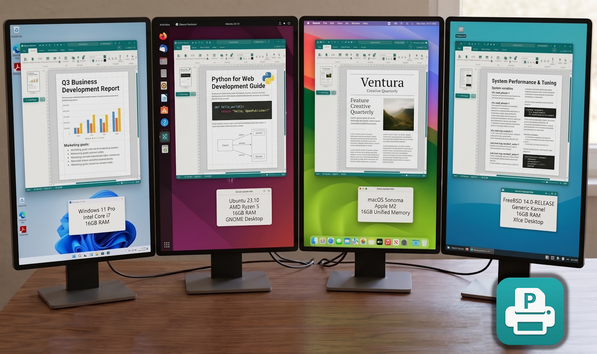
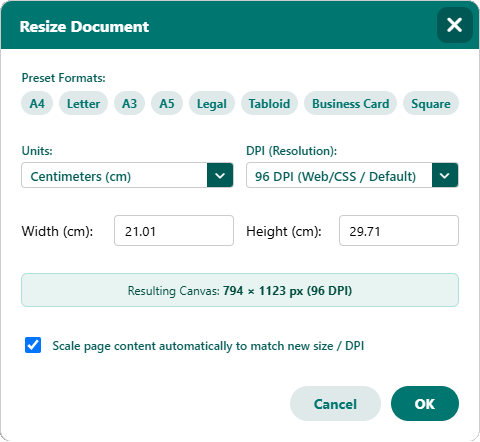
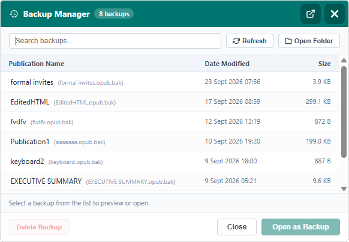
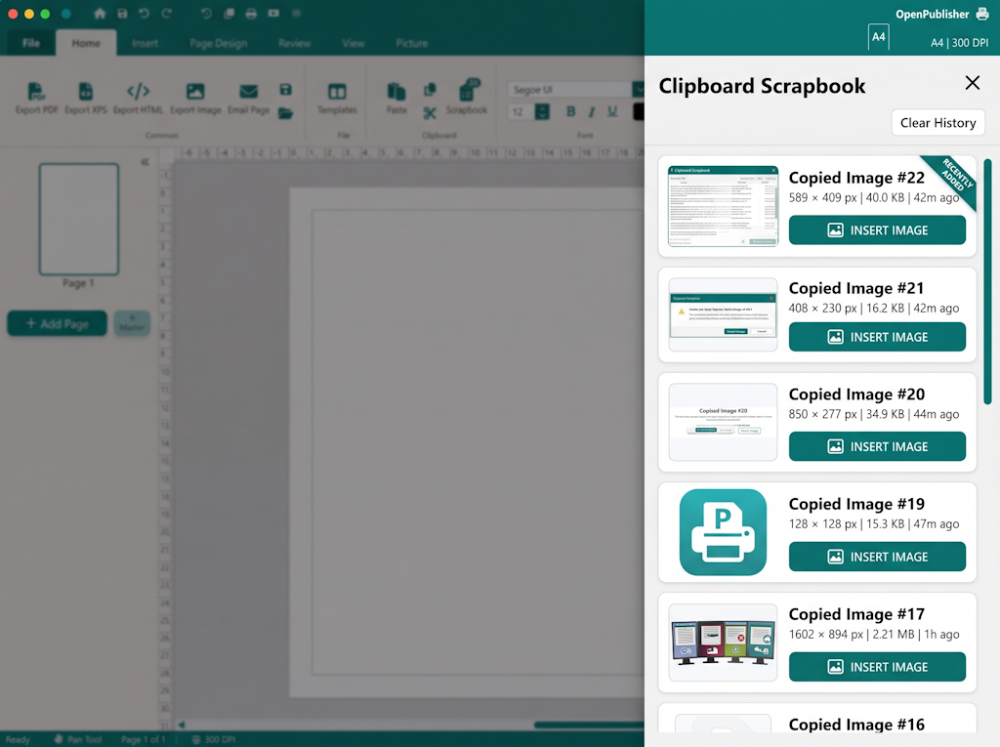
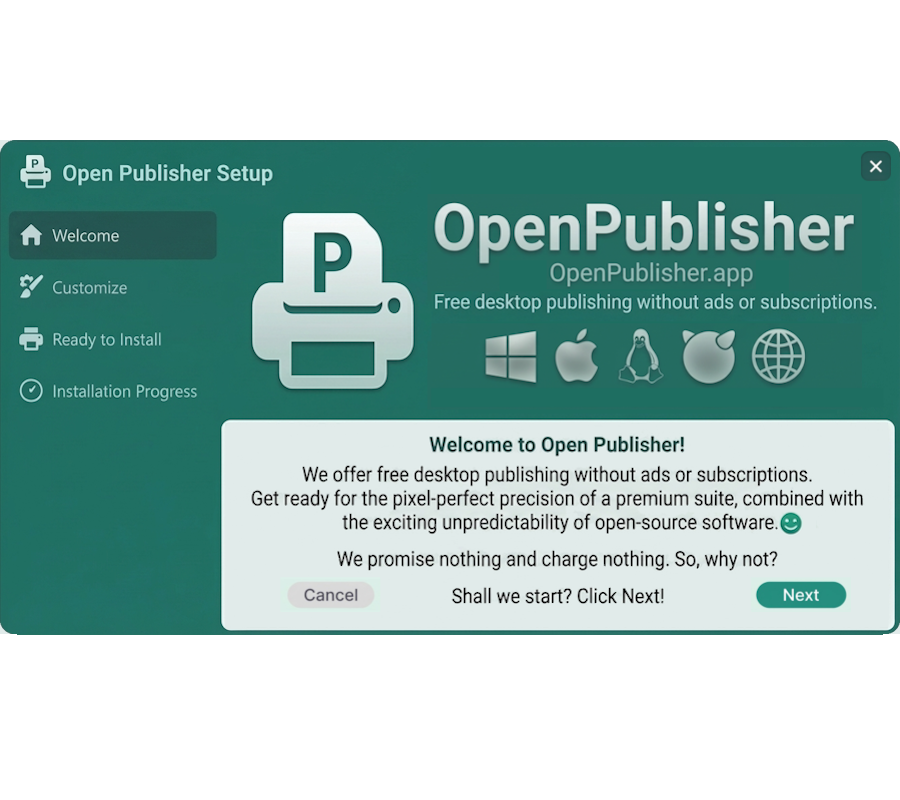
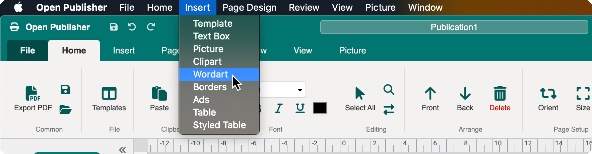
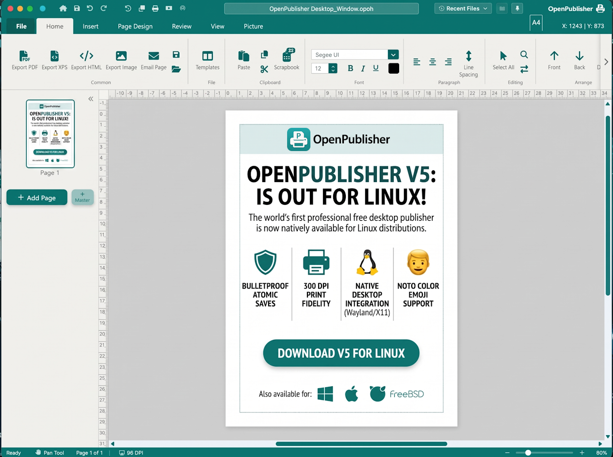

<!DOCTYPE html>
<html lang="en">
<head>
    <meta charset="UTF-8">
    <meta name="viewport" content="width=device-width, initial-scale=1.0">
    <title>Open Publisher V5 - Free Desktop Publishing - Without Ads or Subscriptions</title>
    
    <!-- SEO & Metadata -->
    <meta name="description" content="Free Desktop Publishing - Without Ads or Subscriptions. Professional page design, physical measurement units (cm, mm, inches), 300 DPI zero-spillage printing, and 4-step atomic saves. Available for Windows, macOS, Linux, and FreeBSD.">
    <meta name="keywords" content="Open Publisher V5, desktop publishing, free DTP, 300 DPI print, page layout, WordArt, atomic saves, Linux DTP, FreeBSD publishing, macOS desktop publisher">
    <meta name="author" content="Open Publisher Team">
    <meta name="theme-color" content="#0f766e">
    <link rel="canonical" href="https://download.openpublisher.app/">

    <!-- Open Graph / Social -->
    <meta property="og:type" content="website">
    <meta property="og:url" content="https://download.openpublisher.app/">
    <meta property="og:title" content="Open Publisher V5 - Free Desktop Publishing - Without Ads or Subscriptions">
    <meta property="og:description" content="Native desktop publishing for Windows, macOS, Linux, and FreeBSD. 300 DPI print precision, 4-step atomic saves, unified clipboard, and 72 client architecture enhancements.">
    <meta property="og:image" content="images/open_publisher_preview.png">

    <!-- Twitter Card -->
    <meta name="twitter:card" content="summary_large_image">
    <meta name="twitter:title" content="Open Publisher V5 - Free Desktop Publishing - Without Ads or Subscriptions">
    <meta name="twitter:description" content="Native desktop publishing for Windows, macOS, Linux, and FreeBSD. 300 DPI print precision, 4-step atomic saves, and 72 client architectural upgrades.">
    <meta name="twitter:image" content="images/social_share_preview.png">

    <!-- Schema.org SoftwareApplication JSON-LD -->
    <script type="application/ld+json">
    {
      "@context": "https://schema.org",
      "@type": "SoftwareApplication",
      "name": "Open Publisher",
      "softwareVersion": "5",
      "operatingSystem": "Windows 10/11, macOS 10.15+, Linux (GLIBC 2.28+), FreeBSD 13-15",
      "applicationCategory": "DesignApplication",
      "offers": {
        "@type": "Offer",
        "price": "0",
        "priceCurrency": "USD"
      },
      "description": "Free Desktop Publishing - Without Ads or Subscriptions. Professional page design, physical measurement units, and 300 DPI print output."
    }
    </script>
    <script defer src='https://static.cloudflareinsights.com/beacon.min.js' data-cf-beacon='{"token": "5e8bde4a6d6d40269a62c37247115463"}'></script>
    
    <!-- Stylesheet -->
    <link rel="stylesheet" href="style.css">
</head>
<body id="top">

    <!-- Apple-Standard Header Navigation -->
    <header class="site-header">
        <div class="nav-container">
            <a href="#" class="brand">
                
                <div class="brand-text-wrap">
                    <span class="brand-name">Open Publisher</span>
                    <span class="version-badge">V5</span>
                </div>
            </a>

            <nav class="nav-menu">
                <a href="#hero-download" class="nav-link">Download</a>
                <a href="#spotlights" class="nav-link">Spotlights</a>
                <a href="#v5-catalog" class="nav-link">72 Client Features</a>
                <a href="#platforms" class="nav-link">Platforms</a>
                <a href="#knowledge-base" class="nav-link">Knowledge Base</a>
                <a href="#shortcuts" class="nav-link">Shortcuts</a>
                <a href="#all-downloads" class="nav-link">All Builds</a>
            </nav>

            <div class="header-actions">
                <a href="https://github.com/rmellis/open-publisher" target="_blank" rel="noopener noreferrer" class="btn-header-gh" title="Source Code on GitHub">
                    <svg viewBox="0 0 24 24" width="16" height="16" fill="currentColor">
                        <path d="M12 0C5.37 0 0 5.37 0 12c0 5.31 3.435 9.795 8.205 11.385.6.105.825-.255.825-.57 0-.285-.015-1.23-.015-2.235-3.015.555-3.795-.735-4.035-1.41-.135-.345-.72-1.41-1.23-1.695-.42-.225-1.02-.78-.015-.795.945-.015 1.62.87 1.845 1.23 1.08 1.815 2.805 1.305 3.495.99.105-.78.42-1.305.765-1.605-2.67-.3-5.46-1.335-5.46-5.925 0-1.305.465-2.385 1.23-3.225-.12-.3-.54-1.53.12-3.18 0 0 1.005-.315 3.3 1.23.96-.27 1.98-.405 3-.405s2.04.135 3 .405c2.295-1.56 3.3-1.23 3.3-1.23.66 1.65.24 2.88.12 3.18.765.84 1.23 1.905 1.23 3.225 0 4.605-2.805 5.625-5.475 5.925.435.375.81 1.095.81 2.22 0 1.605-.015 2.895-.015 3.3 0 .315.225.69.825.57A12.02 12.02 0 0024 12c0-6.63-5.37-12-12-12z"/>
                    </svg>
                    <span>GitHub</span>
                </a>
                <a href="#hero-download" class="btn-primary-nav">Get V5</a>
            </div>
        </div>
    </header>

    <main class="page-body">
        
        <!-- Apple-Standard Hero Section -->
        <section class="hero-section" id="hero-download">
            <div class="hero-content">
                <h1 class="hero-title">
                    Free Desktop Publishing<br>
                    <span class="hero-gradient-text">Without Ads or Subscriptions.</span>
                </h1>
                
                <p class="hero-subtext">
                    Open Publisher is a full-featured WYSIWYG desktop publishing suite built as a free, open-source alternative to Microsoft Publisher. 
                    Craft newsletters, brochures, flyers, event posters, menus, and books on a true physical-measurement canvas (CM, MM, Inches) 
                    with absolute coordinate control, linked multi-column text, 200+ vector shapes, 60+ 3D WordArt styles, 3,400+ transparent clipart graphics, and pre-flight proofing.
                </p>

                <!-- What is Open Publisher? 4-Pillar Highlights Grid -->
                <div class="hero-pillars-grid">
                    <div class="hero-pillar-card">
                        <div class="pillar-icon-wrap">
                            <svg viewBox="0 0 24 24" width="20" height="20" fill="none" stroke="currentColor" stroke-width="2" stroke-linecap="round" stroke-linejoin="round">
                                <rect x="3" y="3" width="18" height="18" rx="2"/>
                                <path d="M3 9h18M9 21V9"/>
                            </svg>
                        </div>
                        <div class="pillar-content">
                            <h3 class="pillar-title">True WYSIWYG Canvas</h3>
                            <p class="pillar-desc">
                                Absolute coordinate positioning on fixed dimensions (CM, MM, Inches). Screen designs match printed output exactly with linked multi-column text flow, tab stops with leaders, and drop caps.
                            </p>
                        </div>
                    </div>

                    <div class="hero-pillar-card">
                        <div class="pillar-icon-wrap">
                            <svg viewBox="0 0 24 24" width="20" height="20" fill="none" stroke="currentColor" stroke-width="2" stroke-linecap="round" stroke-linejoin="round">
                                <path d="M21 16V8a2 2 0 00-1-1.73l-7-4a2 2 0 00-2 0l-7 4A2 2 0 003 8v8a2 2 0 001 1.73l7 4a2 2 0 002 0l7-4A2 2 0 0021 16z"/>
                                <polyline points="3.27 6.96 12 12.01 20.73 6.96"/>
                                <line x1="12" y1="22.08" x2="12" y2="12"/>
                            </svg>
                        </div>
                        <div class="pillar-content">
                            <h3 class="pillar-title">200+ Shapes &amp; 3D Engine</h3>
                            <p class="pillar-desc">
                                Over 200 scalable SVG shapes with solid, gradient, and pattern fills, real-time 3D rotation, and 60+ image-based WordArt styles (neon glow, holographic, metallic, and 3D extrusion).
                            </p>
                        </div>
                    </div>

                    <div class="hero-pillar-card">
                        <div class="pillar-icon-wrap">
                            <svg viewBox="0 0 24 24" width="20" height="20" fill="none" stroke="currentColor" stroke-width="2" stroke-linecap="round" stroke-linejoin="round">
                                <rect x="3" y="3" width="18" height="18" rx="2" ry="2"/>
                                <circle cx="8.5" cy="8.5" r="1.5"/>
                                <polyline points="21 15 16 10 5 21"/>
                            </svg>
                        </div>
                        <div class="pillar-content">
                            <h3 class="pillar-title">3,403 Clipart &amp; Page Parts</h3>
                            <p class="pillar-desc">
                                Built-in transparent clipart library, freehand drawing tools (brush, pencil, spray), non-destructive crop-to-shape frames, and drop-in Page Parts (sidebars, pull quotes, coupons, QR codes).
                            </p>
                        </div>
                    </div>

                    <div class="hero-pillar-card">
                        <div class="pillar-icon-wrap">
                            <svg viewBox="0 0 24 24" width="20" height="20" fill="none" stroke="currentColor" stroke-width="2" stroke-linecap="round" stroke-linejoin="round">
                                <path d="M14 2H6a2 2 0 00-2 2v16a2 2 0 002 2h12a2 2 0 002-2V8z"/>
                                <polyline points="14 2 14 8 20 8"/>
                                <path d="M9 15l2 2 4-4"/>
                            </svg>
                        </div>
                        <div class="pillar-content">
                            <h3 class="pillar-title">Editorial &amp; Pre-Flight</h3>
                            <p class="pillar-desc">
                                Built-in Flesch-Kincaid readability scoring, emotional tone detection, automated Design Checker for overflow and low-res warnings, WCAG accessibility audit, and Pack &amp; Go handoff.
                            </p>
                        </div>
                    </div>
                </div>

                <!-- Hero OS Switcher & Download Action Card -->
                <div class="hero-download-container">
                    <div class="segmented-control" role="tablist" aria-label="Operating System Selection">
                        <button class="segment-btn active" data-os="win" role="tab" aria-selected="true">
                            <svg viewBox="0 0 24 24" width="16" height="16" fill="currentColor"><path d="M0 3.449L9.75 2.1v9.451H0m10.949-9.602L24 0v11.4H10.949M0 12.6h9.75v9.451L0 20.699M10.949 12.6H24V24l-12.9-1.801"/></svg>
                            <span>Windows</span>
                        </button>
                        <button class="segment-btn" data-os="mac" role="tab" aria-selected="false">
                            <svg viewBox="0 0 24 24" width="16" height="16" fill="currentColor"><path d="M18.71 19.5c-.83 1.24-1.71 2.45-3.05 2.47-1.34.03-1.77-.79-3.29-.79-1.53 0-2 .77-3.27.82-1.31.05-2.3-1.32-3.14-2.53C4.25 17 2.94 12.45 4.7 9.39c.87-1.52 2.43-2.48 4.12-2.51 1.28-.02 2.5.87 3.29.87.78 0 2.26-1.07 3.81-.91.65.03 2.47.26 3.64 1.98-.09.06-2.17 1.28-2.15 3.81.03 3.02 2.65 4.03 2.68 4.04-.03.07-.42 1.44-1.38 2.83M15.97 6.37c.62-.75 1.04-1.8 0.92-2.85-.9.04-2 .6-2.65 1.35-.58.66-1.09 1.73-.95 2.76.99.08 2.06-.51 2.68-1.26z"/></svg>
                            <span>macOS</span>
                        </button>
                        <button class="segment-btn" data-os="lin" role="tab" aria-selected="false">
                            <svg viewBox="0 0 24 24" width="16" height="16" fill="currentColor"><path d="M12.003 0C8.36 0 6.643 2.22 6.643 5.437c0 1.246.36 2.71 1.026 4.135C5.932 10.985 4.5 13.064 4.5 15.65c0 3.73 2.96 6.85 7.503 6.85 4.542 0 7.497-3.12 7.497-6.85 0-2.586-1.432-4.665-3.17-6.078.667-1.425 1.027-2.889 1.027-4.135C17.357 2.22 15.645 0 12.003 0zm-.006 2.016c2.47 0 3.36 1.47 3.36 3.42 0 1.06-.328 2.37-.89 3.68-.895-.44-1.893-.68-2.923-.68s-2.028.24-2.923.68c-.562-1.31-.89-2.62-.89-3.68 0-1.95.89-3.42 3.36-3.42z"/></svg>
                            <span>Linux</span>
                        </button>
                        <button class="segment-btn" data-os="bsd" role="tab" aria-selected="false">
                            <svg viewBox="0 0 24 24" width="16" height="16" fill="currentColor"><path d="M12 2C6.48 2 2 6.48 2 12s4.48 10 10 10 10-4.48 10-10S17.52 2 12 2zm1 17.93c-3.95-.49-7-3.85-7-7.93 0-.62.08-1.21.21-1.79L9 15v1c0 1.1.9 2 2 2v1.93zm6.9-2.54c-.26-.81-1-1.39-1.9-1.39h-1v-3c0-.55-.45-1-1-1H8v-2h2c.55 0 1-.45 1-1V7h2c1.1 0 2-.9 2-2v-.41c2.93 1.19 5 4.06 5 7.41 0 2.08-.8 3.97-2.1 5.39z"/></svg>
                            <span>FreeBSD</span>
                        </button>
                    </div>

                    <!-- Dynamic OS Download Panel (Displays All Packages as Buttons) -->
                    <div class="download-action-card" id="hero-download-panel">
                        <div class="action-card-header">
                            <div class="action-badge-row">
                                <span class="release-status-tag" id="panel-badge">Official Release</span>
                                <span class="arch-tag" id="panel-arch">64-bit amd64</span>
                            </div>
                            <h3 id="panel-title">Open Publisher V5 for Windows</h3>
                            <p id="panel-sub">Complete standalone desktop publishing suite for Windows 10 &amp; 11 (64-bit) &bull; Native .opub association &amp; 300 DPI print fidelity</p>
                        </div>

                        <!-- Built-in Capabilities Strip (Directly Above Download Buttons) -->
                        <div class="action-card-capabilities">
                            <div class="cap-item">
                                <svg viewBox="0 0 20 20" width="15" height="15" fill="currentColor"><path fill-rule="evenodd" d="M16.707 5.293a1 1 0 010 1.414l-8 8a1 1 0 01-1.414 0l-4-4a1 1 0 011.414-1.414L8 12.586l7.293-7.293a1 1 0 011.414 0z" clip-rule="evenodd"/></svg>
                                <span><strong>Full Publishing Suite:</strong> WYSIWYG canvas, multi-column text, tab leaders &amp; 100 table styles</span>
                            </div>
                            <div class="cap-item">
                                <svg viewBox="0 0 20 20" width="15" height="15" fill="currentColor"><path fill-rule="evenodd" d="M16.707 5.293a1 1 0 010 1.414l-8 8a1 1 0 01-1.414 0l-4-4a1 1 0 011.414-1.414L8 12.586l7.293-7.293a1 1 0 011.414 0z" clip-rule="evenodd"/></svg>
                                <span><strong>Creative Elements:</strong> 3,403 transparent clipart, 200+ vector shapes, 3D rotation &amp; 60+ WordArt</span>
                            </div>
                            <div class="cap-item">
                                <svg viewBox="0 0 20 20" width="15" height="15" fill="currentColor"><path fill-rule="evenodd" d="M16.707 5.293a1 1 0 010 1.414l-8 8a1 1 0 01-1.414 0l-4-4a1 1 0 011.414-1.414L8 12.586l7.293-7.293a1 1 0 011.414 0z" clip-rule="evenodd"/></svg>
                                <span><strong>Proofing &amp; 300 DPI:</strong> Design Checker, Flesch-Kincaid suite, Pack &amp; Go ZIP &amp; PDF export</span>
                            </div>
                            <div class="cap-item">
                                <svg viewBox="0 0 20 20" width="15" height="15" fill="currentColor"><path fill-rule="evenodd" d="M16.707 5.293a1 1 0 010 1.414l-8 8a1 1 0 01-1.414 0l-4-4a1 1 0 011.414-1.414L8 12.586l7.293-7.293a1 1 0 011.414 0z" clip-rule="evenodd"/></svg>
                                <span><strong>100% Free &amp; Private:</strong> GNU GPL V2 licensed, zero telemetry, zero tracking, all data local</span>
                            </div>
                        </div>

                        <!-- All OS Download Buttons (Updated Dynamically by JS with Package Icons) -->
                        <div class="action-card-buttons-grid" id="panel-buttons-area">
                            <!-- Injected by script.js -->
                        </div>

                        <!-- Extra Terminal or Installation Notes -->
                        <div class="action-card-notes" id="panel-notes-area">
                            <!-- Injected by script.js -->
                        </div>
                    </div>

                    <div class="hub-footer-note">
                        <a href="#all-downloads" class="text-link">Need a different build? Explore all 9 packages &amp; direct links &rarr;</a>
                    </div>
                </div>

                <!-- Interactive Ribbon & Workspace Tour (Showcase Window) -->
                <div class="showcase-window-wrap">
                    
                    <!-- Showcase Navigation Pills: All 7 Ribbon Tabs + Interface Overview Directly Linked -->
                    <div class="showcase-tabs" role="tablist" aria-label="Ribbon Workspace Tabs">
                        <button class="showcase-tab active" data-view="overview">
                            <span>🖥️</span> Interface Overview
                        </button>
                        <button class="showcase-tab" data-view="home">
                            <span>✏️</span> Home Ribbon
                        </button>
                        <button class="showcase-tab" data-view="insert">
                            <span>🧩</span> Insert Elements
                        </button>
                        <button class="showcase-tab" data-view="wordart">
                            <span>🎨</span> WordArt Gallery
                        </button>
                        <button class="showcase-tab" data-view="picture">
                            <span>🖼️</span> Picture Tools
                        </button>
                        <button class="showcase-tab" data-view="pagedesign">
                            <span>📐</span> Page Design &amp; DPI
                        </button>
                        <button class="showcase-tab" data-view="templates">
                            <span>📄</span> Template Wizard
                        </button>
                        <button class="showcase-tab" data-view="dashboard">
                            <span>🚀</span> The Dashboard
                        </button>
                        <button class="showcase-tab" data-view="safety">
                            <span>🛡️</span> File Safety &amp; Saves
                        </button>
                    </div>

                    <div class="showcase-window">
                        <div class="window-chrome">
                            <div class="traffic-lights">
                                <span class="light red"></span>
                                <span class="light yellow"></span>
                                <span class="light green"></span>
                            </div>
                            <span class="window-title" id="showcaseWindowTitle">Open Publisher V5 (Desktop_Window.opub)</span>
                            <div class="window-meta-badges">
                                <span class="window-dpi-badge" id="showcaseDpiBadge">Hardware Accelerated</span>
                                <span class="window-unit-badge" id="showcaseUnitBadge">Full Workspace</span>
                            </div>
                        </div>

                        <div class="window-body">
                            <!-- Image Frame with Overlay Tag -->
                            <div class="screenshot-container">
                                
                                
                                <!-- Floating Feature Annotation Tag -->
                                <div class="feature-floating-tag" id="showcaseTag">
                                    <div class="tag-icon">🖥️</div>
                                    <div class="tag-text">
                                        <h4 id="showcaseTagTitle">Open Publisher V5 Desktop Workspace</h4>
                                        <p id="showcaseTagDesc">Familiar, distraction-free publishing environment with responsive vector canvas, ribbon toolbars, and multi-monitor support.</p>
                                    </div>
                                </div>
                            </div>
                        </div>
                    </div>

                    <div class="showcase-footnote">
                        <div class="footnote-item">
                            <strong>True Physical Units:</strong> Centimeters (default), Millimeters, Inches, and Pixels.
                        </div>
                        <div class="footnote-item">
                            <strong>Zero Spillage:</strong> Mathematical page margin calculation guarantees single-page prints never spill onto 3 sheets.
                        </div>
                        <div class="footnote-item">
                            <strong>Zero Ads or Tracking:</strong> 100% free, private, and self-contained desktop software.
                        </div>
                    </div>
                </div>

            </div>
        </section>

        <!-- FLAGSHIP ARCHITECTURAL SPOTLIGHTS -->
        <section class="spotlight-section" id="spotlights">
            <div class="section-heading">
                <span class="section-eyebrow">Engineering Precision</span>
                <h2>Engineered with exacting precision for print fidelity.</h2>
                <p>Open Publisher V5 introduces rigorous architectural systems ensuring high-resolution output and zero data loss.</p>
            </div>

            <!-- Spotlight 1: Physical Precision & DPI -->
            <div class="spotlight-row">
                <div class="spotlight-text">
                    <span class="spotlight-label">Physical Measurement Subsystem</span>
                    <h3>Real Centimeters, Millimeters, and Inches on Canvas</h3>
                    <p>
                        Most graphic editors confuse screen pixels with physical paper. Open Publisher V5 introduces a mathematically authoritative 
                        physical unit engine calibrated for real-world printing.
                    </p>
                    <ul class="spotlight-checklist">
                        <li><strong>Centimeters (cm) Default:</strong> Canvas rulers, dimension dialogs, and coordinates speak native centimeters, millimeters, or inches.</li>
                        <li><strong>300 DPI Print Resolution:</strong> Strict calculation prevents accidental bleed into 3 separate printer sheets.</li>
                        <li><strong>Sub-Pixel Blank Page Elimination:</strong> Precision rounding removes unintentional empty trailing pages on print spools.</li>
                        <li><strong>DPI-Invariant Margins:</strong> Margin presets dynamically re-scale whether editing at 96 DPI, 150 DPI, or 300 DPI.</li>
                    </ul>
                </div>
                <div class="spotlight-visual">
                    <div class="mockup-frame">
                        <div class="mockup-header">
                            <span class="mockup-pill">Page Size &amp; Unit Precision Dialog</span>
                        </div>
                        
                        <div class="mockup-caption">Centralized UnitConversionService ensuring absolute physical dimensions across all zoom levels.</div>
                    </div>
                </div>
            </div>

            <!-- Spotlight 2: Atomic Saves & Backups -->
            <div class="spotlight-row reverse">
                <div class="spotlight-text">
                    <span class="spotlight-label">Bulletproof Integrity</span>
                    <h3>4-Step Atomic Saves &amp; 50-Version Shadow History</h3>
                    <p>
                        Never lose a paragraph of work to sudden crashes, OS restarts, or power cuts. 
                        Open Publisher replaces direct file writes with a hardened atomic save pipeline.
                    </p>
                    <ul class="spotlight-checklist">
                        <li><strong>4-Step Atomic Pipeline:</strong> Writes to temporary storage, verifies byte integrity, atomically replaces destination, and cleans up temp caches.</li>
                        <li><strong>15-Minute Shadow Snapshots:</strong> Background snapshots silently archive up to 50 versions in user AppData without freezing the UI.</li>
                        <li><strong>Interactive Backup Manager:</strong> Recover unsaved files, browse historical versions, or restore projects with a dedicated search modal.</li>
                        <li><strong>External File Watcher:</strong> Seamlessly detects when a file is modified externally and prompts to reload safely.</li>
                    </ul>
                </div>
                <div class="spotlight-visual">
                    <div class="mockup-frame">
                        <div class="mockup-header">
                            <span class="mockup-pill">AppData Backup Manager &bull; Shadow Snapshots</span>
                        </div>
                        
                        <div class="mockup-caption">Dedicated system backup directory with non-blocking serialized asynchronous IPC streams.</div>
                    </div>
                </div>
            </div>

            <!-- Spotlight 3: Unified Clipboard & Scrapbook -->
            <div class="spotlight-row">
                <div class="spotlight-text">
                    <span class="spotlight-label">Workflow Ergonomics</span>
                    <h3>Unified Cross-Platform Clipboard &amp; 25-Item Scrapbook</h3>
                    <p>
                        Cross-platform desktop publishing clipboard synchronization has been completely resolved. 
                        Enjoy 100% parity between Ribbon toolbar buttons and keyboard shortcuts.
                    </p>
                    <ul class="spotlight-checklist">
                        <li><strong>Zero Double-Pasting:</strong> Eliminates duplicate ghost elements when switching between canvas shapes and OS images.</li>
                        <li><strong>100% Ribbon Bar Parity:</strong> Toolbar Copy, Cut, and Paste buttons exhibit identical behavior to <code>Ctrl/Cmd + C/X/V</code>.</li>
                        <li><strong>Intelligent Paste Separation:</strong> Pasting web content extracts images into standalone movable canvas objects separate from text.</li>
                        <li><strong>25-Item Clipboard Scrapbook:</strong> Slide-out drawer caches the last 25 system-copied images for rapid drag-and-drop placement.</li>
                    </ul>
                </div>
                <div class="spotlight-visual">
                    <div class="mockup-frame">
                        <div class="mockup-header">
                            <span class="mockup-pill">Ribbon Scrapbook Drawer &bull; Image Extraction</span>
                        </div>
                        
                        <div class="mockup-caption">Authoritative client-side clipboard subsystem with bidirectional IPC token protection.</div>
                    </div>
                </div>
            </div>

        </section>

        <!-- OFFICIAL OPEN PUBLISHER KNOWLEDGE BASE HUB -->
        <section class="kb-portal-section" id="knowledge-base">
            <div class="kb-portal-card">
                <div class="kb-portal-header">
                    <div class="kb-badge-row">
                        <span class="kb-badge">Official Documentation Portal</span>
                        <span class="kb-domain">kb.openpublisher.app</span>
                    </div>
                    <h2>Open Publisher Knowledge Base</h2>
                    <p class="kb-lead">
                        Looking for user guides, video walkthroughs, and tutorials? The official Open Publisher Knowledge Base is 
                        the dedicated online documentation library for all publishing workflows.
                    </p>
                    <a href="https://kb.openpublisher.app/" target="_blank" rel="noopener noreferrer" class="btn-kb-launch">
                        <span>Visit kb.openpublisher.app</span>
                        <svg viewBox="0 0 24 24" width="18" height="18" fill="currentColor"><path d="M19 19H5V5h7V3H5c-1.11 0-2 .9-2 2v14c0 1.1.89 2 2 2h14c1.1 0 2-.9 2-2v-7h-2v7zM14 3v2h3.59l-9.83 9.83 1.41 1.41L19 6.41V10h2V3h-7z"/></svg>
                    </a>
                </div>

                <div class="kb-pillars-grid">
                    <div class="kb-pillar-item">
                        <div class="pillar-icon">🚀</div>
                        <h4>Getting Started</h4>
                        <p>Document creation wizard, workspace orientation, ribbon bars, and multi-monitor setup.</p>
                        <a href="https://kb.openpublisher.app/" target="_blank" rel="noopener noreferrer" class="pillar-link">Browse topic &rarr;</a>
                    </div>
                    <div class="kb-pillar-item">
                        <div class="pillar-icon">📐</div>
                        <h4>Layout &amp; Dimensions</h4>
                        <p>Setting page sizes (A4, Letter, Custom), physical margin rules, CM/MM rulers, and 300 DPI exports.</p>
                        <a href="https://kb.openpublisher.app/" target="_blank" rel="noopener noreferrer" class="pillar-link">Browse topic &rarr;</a>
                    </div>
                    <div class="kb-pillar-item">
                        <div class="pillar-icon">🎨</div>
                        <h4>Typography &amp; WordArt</h4>
                        <p>Rich text formatting, 200 WordArt headline styles, custom fonts discovery, and text frame linking.</p>
                        <a href="https://kb.openpublisher.app/" target="_blank" rel="noopener noreferrer" class="pillar-link">Browse topic &rarr;</a>
                    </div>
                    <div class="kb-pillar-item">
                        <div class="pillar-icon">🖨️</div>
                        <h4>Print &amp; Export</h4>
                        <p>Zero-spillage single page printing, CMYK PDF rendering, and high-DPI raster graphic export.</p>
                        <a href="https://kb.openpublisher.app/" target="_blank" rel="noopener noreferrer" class="pillar-link">Browse topic &rarr;</a>
                    </div>
                </div>
            </div>
        </section>

        <!-- 72 CLIENT FEATURES CATALOG -->
        <section class="features-catalog-section" id="v5-catalog">
            <div class="section-heading">
                <span class="section-eyebrow">Client Engine Architecture</span>
                <h2>72 Client Features</h2>
                <p>Complete directory of all 72 technical client enhancements and performance upgrades introduced in V5.</p>
                
                <!-- Search & Real-Time Filter -->
                <div class="search-filter-box">
                    <svg viewBox="0 0 24 24" width="18" height="18" fill="none" stroke="currentColor" stroke-width="2"><circle cx="11" cy="11" r="8"/><path d="M21 21l-4.35-4.35"/></svg>
                    <input type="text" id="featureSearchInput" placeholder="Filter 72 client features (e.g. atomic saves, 300 DPI, clipboard, font, zoom, FreeBSD)..." aria-label="Filter 72 Client Features">
                    <span class="search-counter" id="searchCounter">72 of 72 Client Features</span>
                </div>

                <!-- Category Filter Pills -->
                <div class="category-pills" role="tablist" aria-label="Client Feature Categories">
                    <button class="cat-pill active" data-cat="all">All (72)</button>
                    <button class="cat-pill" data-cat="runtime">Runtime, Shell &amp; OS (21)</button>
                    <button class="cat-pill" data-cat="canvas_creative">Canvas &amp; Typography (16)</button>
                    <button class="cat-pill" data-cat="data_safety">Data Safety &amp; Saves (13)</button>
                    <button class="cat-pill" data-cat="export_ui">Export &amp; UI (13)</button>
                    <button class="cat-pill" data-cat="dev_diagnostics">Developer Mode (9)</button>
                </div>
            </div>

            <!-- Stream / Autoscroll Controls Bar -->
            <div class="features-carousel-header">
                <div class="carousel-status-info">
                    <span class="carousel-dot-live"></span>
                    <span class="carousel-mode-label" id="carouselModeLabel">Auto-Scrolling Stream</span>
                </div>

                <div class="carousel-controls">
                    <button class="carousel-control-btn" id="streamPrevBtn" title="Scroll Left" aria-label="Scroll Left">
                        <svg viewBox="0 0 24 24" width="16" height="16" fill="currentColor"><path d="M15.41 7.41L14 6l-6 6 6 6 1.41-1.41L10.83 12z"/></svg>
                    </button>
                    <button class="carousel-play-btn" id="streamPlayPauseBtn" title="Pause Auto-Scroll" aria-label="Pause Auto-Scroll">
                        <span class="play-icon" id="streamPlayIcon">
                            <svg viewBox="0 0 24 24" width="14" height="14" fill="currentColor"><path d="M6 19h4V5H6v14zm8-14v14h4V5h-4z"/></svg>
                        </span>
                        <span id="streamPlayText">Pause</span>
                    </button>
                    <button class="carousel-control-btn" id="streamNextBtn" title="Scroll Right" aria-label="Scroll Right">
                        <svg viewBox="0 0 24 24" width="16" height="16" fill="currentColor"><path d="M10 6L8.59 7.41 13.17 12l-4.58 4.59L10 18l6-6z"/></svg>
                    </button>

                    <div class="carousel-view-toggle">
                        <button class="view-toggle-btn active" id="viewModeStream" title="Compact Horizontal Stream">
                            <svg viewBox="0 0 24 24" width="14" height="14" fill="currentColor"><path d="M4 6h16v3H4zm0 5h16v3H4zm0 5h16v3H4z"/></svg>
                            <span>Stream</span>
                        </button>
                        <button class="view-toggle-btn" id="viewModeGrid" title="Expanded Full Grid">
                            <svg viewBox="0 0 24 24" width="14" height="14" fill="currentColor"><path d="M3 3v8h8V3H3zm2 2h4v4H5V5zm8-2v8h8V3h-8zm2 2h4v4h-4V5zM3 13v8h8v-8H3zm2 2h4v4H5v-4zm8-2v8h8v-8h-8zm2 2h4v4h-4v-4z"/></svg>
                            <span>Grid</span>
                        </button>
                    </div>
                </div>
            </div>

            <!-- Features Cards Viewport & Track -->
            <div class="features-carousel-viewport" id="featuresCarouselViewport">
                <div class="features-catalog-track" id="featuresCatalogTrack">
                <div class="feature-item-card" data-category="data_safety" data-keywords="non-blocking saves & async ipc update async_ipc_update data safety & recovery <strong>improved dialog handling:</strong> by removing the save data from the dialog pipeline, standard alerts and prompts within the app will also perform more cleanly and reliably.">
                    <div class="feature-item-header">
                        <span class="feature-cat-badge">🛡️ Data Safety & Recovery</span>
                        <span class="feature-id-badge">#01</span>
                    </div>
                    <h4 class="feature-item-title">Non-Blocking Saves & Async IPC Update</h4>
                    <ul class="feature-item-list">
                        <li><strong>Improved Dialog Handling:</strong> By removing the save data from the dialog pipeline, standard alerts and prompts within the app will also perform more cleanly and reliably.</li>
                    </ul>
                </div>
                <div class="feature-item-card" data-category="data_safety" data-keywords="atomic save feature atomic_save_feature data safety & recovery <strong>temporary write:</strong> the new document data is written to a temporary file (`[filename].opub.tmp`). the original file remains completely untouched during this phase. <strong>verification:</strong> the system checks the byte-length of the `.tmp` file to verify that the write was successful and the file is not empty (e.g., catching disk-full errors mid-write). <strong>backup rotation:</strong> if the original file already exists, it is copied to a backup file (`[filename].opub.bak`). this ensures you always have the last known-good version of your document.">
                    <div class="feature-item-header">
                        <span class="feature-cat-badge">🛡️ Data Safety & Recovery</span>
                        <span class="feature-id-badge">#02</span>
                    </div>
                    <h4 class="feature-item-title">Atomic Save Feature</h4>
                    <ul class="feature-item-list">
                        <li><strong>Temporary Write:</strong> The new document data is written to a temporary file (`[filename].opub.tmp`). The original file remains completely untouched during this phase.</li>
                        <li><strong>Verification:</strong> The system checks the byte-length of the `.tmp` file to verify that the write was successful and the file is not empty (e.g., catching disk-full errors mid-write).</li>
                        <li><strong>Backup Rotation:</strong> If the original file already exists, it is copied to a backup file (`[filename].opub.bak`). This ensures you always have the last known-good version of your document.</li>
                    </ul>
                </div>
                <div class="feature-item-card" data-category="data_safety" data-keywords="dedicated backup and recovery directory migration backup_directory_relocation_update data safety & recovery <strong>dedicated system backup directory:</strong> implemented getbackupdirectory() which routes backup rotation to appdata\local\openpublisher\user data\default\backups (with a safe fallback to %temp%\openpublisher-backups). <strong>working directory clutter elimination:</strong> updated atomicsave() to write .bak copies directly into the system backup folder instead of creating .bak files alongside the original project file. <strong>legacy backup cleanup:</strong> added automated cleanup in atomicsave() that automatically unlinks and removes any legacy .bak files remaining in the document working directory whenever the document is saved.">
                    <div class="feature-item-header">
                        <span class="feature-cat-badge">🛡️ Data Safety & Recovery</span>
                        <span class="feature-id-badge">#03</span>
                    </div>
                    <h4 class="feature-item-title">Dedicated Backup and Recovery Directory Migration</h4>
                    <ul class="feature-item-list">
                        <li><strong>Dedicated System Backup Directory:</strong> Implemented getBackupDirectory() which routes backup rotation to AppData\Local\OpenPublisher\User Data\Default\Backups (with a safe fallback to %TEMP%\OpenPublisher-Backups).</li>
                        <li><strong>Working Directory Clutter Elimination:</strong> Updated atomicSave() to write .bak copies directly into the system backup folder instead of creating .bak files alongside the original project file.</li>
                        <li><strong>Legacy Backup Cleanup:</strong> Added automated cleanup in atomicSave() that automatically unlinks and removes any legacy .bak files remaining in the document working directory whenever the document is saved.</li>
                    </ul>
                </div>
                <div class="feature-item-card" data-category="data_safety" data-keywords="interactive backup manager & system tray recovery integration backup_manager_feature_update data safety & recovery <strong>metadata inspection & listing:</strong> each backup entry displays its publication name, raw filename, last modified date and time, file size, and parsed page count with selected-item preview highlights. <strong>unsaved changes guard:</strong> added safety confirmation checks prior to loading a backup if the user currently has unsaved modifications in their working document. <strong>multi-entry access:</strong> ">
                    <div class="feature-item-header">
                        <span class="feature-cat-badge">🛡️ Data Safety & Recovery</span>
                        <span class="feature-id-badge">#04</span>
                    </div>
                    <h4 class="feature-item-title">Interactive Backup Manager & System Tray Recovery Integration</h4>
                    <ul class="feature-item-list">
                        <li><strong>Metadata Inspection & Listing:</strong> Each backup entry displays its publication name, raw filename, last modified date and time, file size, and parsed page count with selected-item preview highlights.</li>
                        <li><strong>Unsaved Changes Guard:</strong> Added safety confirmation checks prior to loading a backup if the user currently has unsaved modifications in their working document.</li>
                        <li><strong>Multi-Entry Access:</strong> </li>
                    </ul>
                </div>
                <div class="feature-item-card" data-category="canvas_creative" data-keywords="canvas element copy, cut & paste subsystem update canvas_element_copy_paste_update canvas, typography & editing precise ui button target matching: replaced container ancestor walking with targeted button resolution using closest('button, [role=&quot;button&quot;], [role=&quot;menuitem&quot;], .tool-btn, .btn, .pub-context-item, .context-item, .context-menu-item, .dropdown-item, ...'). eliminates false positives where clicking other buttons (e.g. copy) inside a ribbon group or toolbar was mistakenly intercepted by the container's concatenated text.">
                    <div class="feature-item-header">
                        <span class="feature-cat-badge">✏️ Canvas, Typography & Editing</span>
                        <span class="feature-id-badge">#05</span>
                    </div>
                    <h4 class="feature-item-title">Canvas Element Copy, Cut & Paste Subsystem Update</h4>
                    <ul class="feature-item-list">
                        <li>Precise UI Button Target Matching:</li>
                        <li>Replaced container ancestor walking with targeted button resolution using closest('button, [role="button"], [role="menuitem"], .tool-btn, .btn, .pub-context-item, .context-item, .context-menu-item, .dropdown-item, ...').</li>
                        <li>Eliminates false positives where clicking other buttons (e.g. Copy) inside a ribbon group or toolbar was mistakenly intercepted by the container's concatenated text.</li>
                    </ul>
                </div>
                <div class="feature-item-card" data-category="data_safety" data-keywords="chromium idle auto-save (chrome.idle) chrome_idle_autosave_update data safety & recovery <strong>idle detection initialization:</strong>  set chrome.idle.setdetectioninterval(600) to configure the system idle threshold to 10 minutes (600 seconds). <strong>state change listener:</strong> ">
                    <div class="feature-item-header">
                        <span class="feature-cat-badge">🛡️ Data Safety & Recovery</span>
                        <span class="feature-id-badge">#06</span>
                    </div>
                    <h4 class="feature-item-title">Chromium Idle Auto-Save (chrome.idle)</h4>
                    <ul class="feature-item-list">
                        <li><strong>Idle Detection Initialization:</strong> </li>
                        <li>Set chrome.idle.setDetectionInterval(600) to configure the system idle threshold to 10 minutes (600 seconds).</li>
                        <li><strong>State Change Listener:</strong> </li>
                    </ul>
                </div>
                <div class="feature-item-card" data-category="canvas_creative" data-keywords="native clipboard & paste button integration update clean_clipboard_update canvas, typography & editing direct ipc listener (`op_get_clean_clipboard`) for the web app to invoke native clipboard pastes via `webview.paste()`. ipc listener: modified `wrapper.html` to intercept `op_get_clean_clipboard` in the `consolemessage` event listener. context menu support: extended control detection to include `.pub-context-menu`, `.pub-context-item`, `#minimap-context-menu`, and general dropdown/context items. when a context menu paste item is clicked:">
                    <div class="feature-item-header">
                        <span class="feature-cat-badge">✏️ Canvas, Typography & Editing</span>
                        <span class="feature-id-badge">#07</span>
                    </div>
                    <h4 class="feature-item-title">Native Clipboard & Paste Button Integration Update</h4>
                    <ul class="feature-item-list">
                        <li>Direct IPC listener (`OP_GET_CLEAN_CLIPBOARD`) for the web app to invoke native clipboard pastes via `webview.paste()`.</li>
                        <li>IPC Listener: Modified `wrapper.html` to intercept `OP_GET_CLEAN_CLIPBOARD` in the `consolemessage` event listener.</li>
                        <li>Context Menu Support: Extended control detection to include `.pub-context-menu`, `.pub-context-item`, `#minimap-context-menu`, and general dropdown/context items. When a context menu Paste item is clicked:</li>
                    </ul>
                </div>
                <div class="feature-item-card" data-category="canvas_creative" data-keywords="openpublisher v5 unified client-side clipboard hijack & synchronization client_clipboard_hijack_update canvas, typography & editing double-pasting bug: copying an element in openpublisher followed by copying an ribbon paste lock: clicking the ribbon &quot;paste&quot; button only pasted what was last internal element copy failure: in sandboxed webviews, navigator.clipboard.writetext">
                    <div class="feature-item-header">
                        <span class="feature-cat-badge">✏️ Canvas, Typography & Editing</span>
                        <span class="feature-id-badge">#08</span>
                    </div>
                    <h4 class="feature-item-title">OpenPublisher V5 Unified Client-Side Clipboard Hijack & Synchronization</h4>
                    <ul class="feature-item-list">
                        <li>Double-pasting bug: Copying an element in OpenPublisher followed by copying an</li>
                        <li>Ribbon paste lock: Clicking the Ribbon "Paste" button only pasted what was last</li>
                        <li>Internal element copy failure: In sandboxed webviews, navigator.clipboard.writeText</li>
                    </ul>
                </div>
                <div class="feature-item-card" data-category="canvas_creative" data-keywords="clipboard scrapbook subsystem & ribbon drawer integration update clipboard_scrapbook_update canvas, typography & editing automated background os clipboard image interception that polls for copied images (from browsers, screenshot tools, image editors, etc.) every 2 seconds for both png and jpeg formats. local temporary disk cache with a fifo limit of 25 items, persisting image data and metadata across application launches. dual native ribbon buttons injected into home -> clipboard and insert -> illustrations, featuring teal icons and live badge counters.">
                    <div class="feature-item-header">
                        <span class="feature-cat-badge">✏️ Canvas, Typography & Editing</span>
                        <span class="feature-id-badge">#09</span>
                    </div>
                    <h4 class="feature-item-title">Clipboard Scrapbook Subsystem & Ribbon Drawer Integration Update</h4>
                    <ul class="feature-item-list">
                        <li>Automated background OS clipboard image interception that polls for copied images (from browsers, screenshot tools, image editors, etc.) every 2 seconds for both PNG and JPEG formats.</li>
                        <li>Local temporary disk cache with a FIFO limit of 25 items, persisting image data and metadata across application launches.</li>
                        <li>Dual native ribbon buttons injected into Home -> Clipboard and Insert -> Illustrations, featuring teal icons and live badge counters.</li>
                    </ul>
                </div>
                <div class="feature-item-card" data-category="dev_diagnostics" data-keywords="microsoft agent (clippy) assistant integration update (remote mklab architecture) clippy_remote_assistant_update developer mode & diagnostics legal & hosting architecture disclosure: zero server hosting on openpublisher.app: the openpublisher.app website and hosting infrastructure do not host, store, or distribute any clippy or microsoft agent proprietary content. on-demand lazy loading: no assets, stylesheets, or scripts are downloaded until the user explicitly clicks the &quot;clippy&quot; button.">
                    <div class="feature-item-header">
                        <span class="feature-cat-badge">🛠️ Developer Mode & Diagnostics</span>
                        <span class="feature-id-badge">#10</span>
                    </div>
                    <h4 class="feature-item-title">Microsoft Agent (Clippy) Assistant Integration Update (Remote MKLab Architecture)</h4>
                    <ul class="feature-item-list">
                        <li>Legal & Hosting Architecture Disclosure:</li>
                        <li>ZERO SERVER HOSTING ON OPENPUBLISHER.APP: The openpublisher.app website and hosting infrastructure do not host, store, or distribute any Clippy or Microsoft Agent proprietary content.</li>
                        <li>ON-DEMAND LAZY LOADING: No assets, stylesheets, or scripts are downloaded until the user explicitly clicks the "Clippy" button.</li>
                    </ul>
                </div>
                <div class="feature-item-card" data-category="runtime" data-keywords="developer hud &quot;close to system tray&quot; & single instance restoration close_to_tray_update runtime, shell & os hud interface & switch styling: added a dedicated &quot;preferences&quot; section to the developer hud with a toggle switch labeled &quot;close to system tray&quot;. styled with custom .dev-switch and .dev-slider controls matching the dark debug hud theme with teal active states.">
                    <div class="feature-item-header">
                        <span class="feature-cat-badge">⚙️ Runtime, Shell & OS</span>
                        <span class="feature-id-badge">#11</span>
                    </div>
                    <h4 class="feature-item-title">Developer HUD "Close to System Tray" & Single Instance Restoration</h4>
                    <ul class="feature-item-list">
                        <li>HUD Interface & Switch Styling:</li>
                        <li>Added a dedicated "Preferences" section to the Developer HUD with a toggle switch labeled "Close to System Tray".</li>
                        <li>Styled with custom .dev-switch and .dev-slider controls matching the dark debug HUD theme with teal active states.</li>
                    </ul>
                </div>
                <div class="feature-item-card" data-category="runtime" data-keywords="expanded comprehensive desktop crash logs crash_log_generation_update runtime, shell & os <strong>hud metric extraction:</strong>  dynamically rips the exact webview ram, webview fps, and dom nodes directly from the dom ui elements (#dev-stat-ram, etc.) right before the renderer is terminated. <strong>node process diagnostics:</strong> ">
                    <div class="feature-item-header">
                        <span class="feature-cat-badge">⚙️ Runtime, Shell & OS</span>
                        <span class="feature-id-badge">#12</span>
                    </div>
                    <h4 class="feature-item-title">Expanded Comprehensive Desktop Crash Logs</h4>
                    <ul class="feature-item-list">
                        <li><strong>HUD Metric Extraction:</strong> </li>
                        <li>Dynamically rips the exact Webview RAM, Webview FPS, and DOM Nodes directly from the DOM UI elements (#dev-stat-ram, etc.) right before the renderer is terminated.</li>
                        <li><strong>Node process Diagnostics:</strong> </li>
                    </ul>
                </div>
                <div class="feature-item-card" data-category="runtime" data-keywords="openpublisher v5 cross-platform architecture & readiness audit cross_platform_compatibility_update runtime, shell & os dynamic menu accelerators (macos vs windows/linux/freebsd): previously, all application menubar accelerator shortcuts in setupapplicationmenubar() on macos, this prevented standard apple shortcuts and required pressing the physical control">
                    <div class="feature-item-header">
                        <span class="feature-cat-badge">⚙️ Runtime, Shell & OS</span>
                        <span class="feature-id-badge">#13</span>
                    </div>
                    <h4 class="feature-item-title">OpenPublisher V5 Cross-Platform Architecture & Readiness Audit</h4>
                    <ul class="feature-item-list">
                        <li>Dynamic Menu Accelerators (macOS vs Windows/Linux/FreeBSD):</li>
                        <li>Previously, all application menubar accelerator shortcuts in setupApplicationMenuBar()</li>
                        <li>On macOS, this prevented standard Apple shortcuts and required pressing the physical Control</li>
                    </ul>
                </div>
                <div class="feature-item-card" data-category="export_ui" data-keywords="custom teal green on dark scrollbars (export queue & doc preview) custom_teal_dark_scrollbars_update export, spooling & ui root cause identification: presentation preview (doc_preview.html) loaded openpublisher's external style.css, export & print queue monitor (export_queue.html) did not load style.css, resulting">
                    <div class="feature-item-header">
                        <span class="feature-cat-badge">🖨️ Export, Spooling & UI</span>
                        <span class="feature-id-badge">#14</span>
                    </div>
                    <h4 class="feature-item-title">Custom Teal Green on Dark Scrollbars (Export Queue & Doc Preview)</h4>
                    <ul class="feature-item-list">
                        <li>Root Cause Identification:</li>
                        <li>Presentation Preview (doc_preview.html) loaded OpenPublisher's external style.css,</li>
                        <li>Export & Print Queue Monitor (export_queue.html) did not load style.css, resulting</li>
                    </ul>
                </div>
                <div class="feature-item-card" data-category="data_safety" data-keywords="developer hud ipc traffic sniffer & uniform badge sizing dev_hud_ipc_traffic_sniffer_update data safety & recovery uniform badge dimensions: added `align-items: flex-start;` to `.dev-log-entry` in wrapper.html css. defined `.dev-log-badge` with fixed 14px height, `min-width: 24px`, and">
                    <div class="feature-item-header">
                        <span class="feature-cat-badge">🛡️ Data Safety & Recovery</span>
                        <span class="feature-id-badge">#15</span>
                    </div>
                    <h4 class="feature-item-title">Developer HUD IPC Traffic Sniffer & Uniform Badge Sizing</h4>
                    <ul class="feature-item-list">
                        <li>Uniform Badge Dimensions:</li>
                        <li>Added `align-items: flex-start;` to `.dev-log-entry` in wrapper.html CSS.</li>
                        <li>Defined `.dev-log-badge` with fixed 14px height, `min-width: 24px`, and</li>
                    </ul>
                </div>
                <div class="feature-item-card" data-category="dev_diagnostics" data-keywords="memory footprint bar chart & live rate monitor (developer hud) dev_hud_memory_chart_update developer mode & diagnostics <strong>inspector sync:</strong> hovering over any individual bar instantly logs that bar's exact sample number, time offset, and megabyte reading directly into the text field, reverting seamlessly to the live rate on mouse leave. <strong>subpixel & flicker fix:</strong> eliminated dirty-rect rasterization artifacts and stray flickering pixels on the leftmost bar by: promoting the chart container and bars to dedicated gpu composited layers (transform: translatez(0) and contain: paint).">
                    <div class="feature-item-header">
                        <span class="feature-cat-badge">🛠️ Developer Mode & Diagnostics</span>
                        <span class="feature-id-badge">#16</span>
                    </div>
                    <h4 class="feature-item-title">Memory Footprint Bar Chart & Live Rate Monitor (Developer HUD)</h4>
                    <ul class="feature-item-list">
                        <li><strong>Inspector Sync:</strong> Hovering over any individual bar instantly logs that bar's exact sample number, time offset, and megabyte reading directly into the text field, reverting seamlessly to the live rate on mouse leave.</li>
                        <li><strong>Subpixel & Flicker Fix:</strong> Eliminated dirty-rect rasterization artifacts and stray flickering pixels on the leftmost bar by:</li>
                        <li>Promoting the chart container and bars to dedicated GPU composited layers (transform: translateZ(0) and contain: paint).</li>
                    </ul>
                </div>
                <div class="feature-item-card" data-category="dev_diagnostics" data-keywords="developer hud tearaway pop-out window (standalone window architecture) dev_hud_tearaway_popout_update developer mode & diagnostics dedicated native window architecture (hud.html): eliminated cross-document appendchild dom transfer, which previously caused built a dedicated standalone window (hud.html) with matching brand styling,">
                    <div class="feature-item-header">
                        <span class="feature-cat-badge">🛠️ Developer Mode & Diagnostics</span>
                        <span class="feature-id-badge">#17</span>
                    </div>
                    <h4 class="feature-item-title">Developer HUD Tearaway Pop-Out Window (Standalone Window Architecture)</h4>
                    <ul class="feature-item-list">
                        <li>Dedicated Native Window Architecture (hud.html):</li>
                        <li>Eliminated cross-document appendChild DOM transfer, which previously caused</li>
                        <li>Built a dedicated standalone window (hud.html) with matching brand styling,</li>
                    </ul>
                </div>
                <div class="feature-item-card" data-category="dev_diagnostics" data-keywords="developer mode & ui live reload update developer_mode_update developer mode & diagnostics **activation & universal hotkey (`ctrl+shift+d`)** implemented hotkey detection across all application contexts: directly in `wrapper.html` window and document scopes.">
                    <div class="feature-item-header">
                        <span class="feature-cat-badge">🛠️ Developer Mode & Diagnostics</span>
                        <span class="feature-id-badge">#18</span>
                    </div>
                    <h4 class="feature-item-title">Developer Mode & UI Live Reload Update</h4>
                    <ul class="feature-item-list">
                        <li>**Activation & Universal Hotkey (`Ctrl+Shift+D`)**</li>
                        <li>Implemented hotkey detection across all application contexts:</li>
                        <li>Directly in `wrapper.html` window and document scopes.</li>
                    </ul>
                </div>
                <div class="feature-item-card" data-category="dev_diagnostics" data-keywords="openpublisher v5 comprehensive workspace directory tidy-up patch directory_cleanup_patch_update developer mode & diagnostics dedicated subwindow directory ('windows/'): relocated 7 companion subwindows and their auxiliary styles from the root windows/hud.html (openpublisher developer hud overlay)">
                    <div class="feature-item-header">
                        <span class="feature-cat-badge">🛠️ Developer Mode & Diagnostics</span>
                        <span class="feature-id-badge">#19</span>
                    </div>
                    <h4 class="feature-item-title">OpenPublisher V5 Comprehensive Workspace Directory Tidy-Up Patch</h4>
                    <ul class="feature-item-list">
                        <li>Dedicated Subwindow Directory ('windows/'):</li>
                        <li>Relocated 7 companion subwindows and their auxiliary styles from the root</li>
                        <li>windows/hud.html (OpenPublisher Developer HUD Overlay)</li>
                    </ul>
                </div>
                <div class="feature-item-card" data-category="data_safety" data-keywords="dynamic titlebar dirty state indication dirty_state_titlebar_update data safety & recovery <strong>real-time dirty state broadcast (wrapper.html):</strong>  injected a lightweight polling loop into the webview's main world that continually evaluates the document state against _lastsaveddata. when the state changes, it broadcasts a new op_dirty_state_change ipc message up to the wrapper.">
                    <div class="feature-item-header">
                        <span class="feature-cat-badge">🛡️ Data Safety & Recovery</span>
                        <span class="feature-id-badge">#20</span>
                    </div>
                    <h4 class="feature-item-title">Dynamic Titlebar Dirty State Indication</h4>
                    <ul class="feature-item-list">
                        <li><strong>Real-Time Dirty State Broadcast (wrapper.html):</strong> </li>
                        <li>Injected a lightweight polling loop into the webview's main world that continually evaluates the document state against _lastSavedData.</li>
                        <li>When the state changes, it broadcasts a new OP_DIRTY_STATE_CHANGE IPC message up to the wrapper.</li>
                    </ul>
                </div>
                <div class="feature-item-card" data-category="canvas_creative" data-keywords="prevent accidental wrapper selection & dragging disable_wrapper_selection_update canvas, typography & editing <strong>global css rules:</strong>  added universal rules user-select: none, -webkit-user-select: none, and -webkit-user-drag: none across html, ody, and all wrapper chrome dom elements (*, *::before, *::after). completely eliminates blue highlight boxes and ghost dragging when clicking, clicking-and-dragging, or double-clicking anywhere on wrapper chrome (e.g. recent documents menu items, paths, headers, and buttons).">
                    <div class="feature-item-header">
                        <span class="feature-cat-badge">✏️ Canvas, Typography & Editing</span>
                        <span class="feature-id-badge">#21</span>
                    </div>
                    <h4 class="feature-item-title">Prevent Accidental Wrapper Selection & Dragging</h4>
                    <ul class="feature-item-list">
                        <li><strong>Global CSS Rules:</strong> </li>
                        <li>Added universal rules user-select: none, -webkit-user-select: none, and -webkit-user-drag: none across html, ody, and all wrapper chrome DOM elements (*, *::before, *::after).</li>
                        <li>Completely eliminates blue highlight boxes and ghost dragging when clicking, clicking-and-dragging, or double-clicking anywhere on wrapper chrome (e.g. Recent Documents menu items, paths, headers, and buttons).</li>
                    </ul>
                </div>
                <div class="feature-item-card" data-category="export_ui" data-keywords="document presentation preview (standalone tearaway subsystem) document_presentation_preview_update export, spooling & ui standalone native window (doc_preview.html): frameless, translucent dark-glass aesthetic with native os window dragging independent window sizing (840x640 default) that can be moved across monitors">
                    <div class="feature-item-header">
                        <span class="feature-cat-badge">🖨️ Export, Spooling & UI</span>
                        <span class="feature-id-badge">#22</span>
                    </div>
                    <h4 class="feature-item-title">Document Presentation Preview (Standalone Tearaway Subsystem)</h4>
                    <ul class="feature-item-list">
                        <li>Standalone Native Window (doc_preview.html):</li>
                        <li>Frameless, translucent dark-glass aesthetic with native OS window dragging</li>
                        <li>Independent window sizing (840x640 default) that can be moved across monitors</li>
                    </ul>
                </div>
                <div class="feature-item-card" data-category="canvas_creative" data-keywords=" update: html5 drag-and-drop overlay drag_and_drop_overlay_update canvas, typography & editing - a new native html5 drag-and-drop listener to the body of wrapper.html. - implemented dragenter, dragleave, dragover, and drop events.">
                    <div class="feature-item-header">
                        <span class="feature-cat-badge">✏️ Canvas, Typography & Editing</span>
                        <span class="feature-id-badge">#23</span>
                    </div>
                    <h4 class="feature-item-title"> Update: HTML5 Drag-and-Drop Overlay</h4>
                    <ul class="feature-item-list">
                        <li>- A new native HTML5 drag-and-drop listener to the body of wrapper.html.</li>
                        <li>- Implemented dragenter, dragleave, dragover, and drop events.</li>
                    </ul>
                </div>
                <div class="feature-item-card" data-category="runtime" data-keywords="openpublisher v5 dynamic operating system edition detection dynamic_os_edition_update runtime, shell & os dynamic operating system detection engine: detectoperatingsysteminfo(overrideplatform): inspects process.platform ('win32', 'darwin', 'linux', 'freebsd')">
                    <div class="feature-item-header">
                        <span class="feature-cat-badge">⚙️ Runtime, Shell & OS</span>
                        <span class="feature-id-badge">#24</span>
                    </div>
                    <h4 class="feature-item-title">OpenPublisher V5 Dynamic Operating System Edition Detection</h4>
                    <ul class="feature-item-list">
                        <li>Dynamic Operating System Detection Engine:</li>
                        <li>detectOperatingSystemInfo(overridePlatform):</li>
                        <li>Inspects process.platform ('win32', 'darwin', 'linux', 'freebsd')</li>
                    </ul>
                </div>
                <div class="feature-item-card" data-category="export_ui" data-keywords="dynamic theme synchronization & cross-session persistence dynamic_theme_sync_update export, spooling & ui webview partition ephemerality: the webview element used partition=&quot;trusted&quot;, which chromium/nw.js treats as an ephemeral in-memory partition. all guest storage (including localstorage.getitem('opub_ui_theme')) was discarded upon application exit. wrapper storage gap: the op_theme_update ipc listener updated in-memory css variables but did not write to the client's localstorage. startup theme reset: on application startup, :root css variables defaulted to hardcoded #146f6e, with no restoration routine executing before window render.">
                    <div class="feature-item-header">
                        <span class="feature-cat-badge">🖨️ Export, Spooling & UI</span>
                        <span class="feature-id-badge">#25</span>
                    </div>
                    <h4 class="feature-item-title">Dynamic Theme Synchronization & Cross-Session Persistence</h4>
                    <ul class="feature-item-list">
                        <li>Webview Partition Ephemerality: The webview element used partition="trusted", which Chromium/NW.js treats as an ephemeral in-memory partition. All guest storage (including localStorage.getItem('opub_ui_theme')) was discarded upon application exit.</li>
                        <li>Wrapper Storage Gap: The OP_THEME_UPDATE IPC listener updated in-memory CSS variables but did not write to the client's localStorage.</li>
                        <li>Startup Theme Reset: On application startup, :root CSS variables defaulted to hardcoded #146F6E, with no restoration routine executing before window render.</li>
                    </ul>
                </div>
                <div class="feature-item-card" data-category="export_ui" data-keywords="exit modal ui modernization exit_modal_visual_redesign export, spooling & ui <strong>layout & proportions (wrapper.html):</strong>  reduced the modal width slightly from 400px to 380px. reduced the overall corner radius from a bulky 12px to a standard native 6px.">
                    <div class="feature-item-header">
                        <span class="feature-cat-badge">🖨️ Export, Spooling & UI</span>
                        <span class="feature-id-badge">#26</span>
                    </div>
                    <h4 class="feature-item-title">Exit Modal UI Modernization</h4>
                    <ul class="feature-item-list">
                        <li><strong>Layout & Proportions (wrapper.html):</strong> </li>
                        <li>Reduced the modal width slightly from 400px to 380px.</li>
                        <li>Reduced the overall corner radius from a bulky 12px to a standard native 6px.</li>
                    </ul>
                </div>
                <div class="feature-item-card" data-category="export_ui" data-keywords="export & print queue monitor (queue management & multi-page print) export_print_queue_monitor_update export, spooling & ui standalone tearaway architecture (export_queue.html): frameless, translucent dark-glass aesthetic with native os window dragging sized at 720x520 default with multi-monitor positioning support.">
                    <div class="feature-item-header">
                        <span class="feature-cat-badge">🖨️ Export, Spooling & UI</span>
                        <span class="feature-id-badge">#27</span>
                    </div>
                    <h4 class="feature-item-title">Export & Print Queue Monitor (Queue Management & Multi-Page Print)</h4>
                    <ul class="feature-item-list">
                        <li>Standalone Tearaway Architecture (export_queue.html):</li>
                        <li>Frameless, translucent dark-glass aesthetic with native OS window dragging</li>
                        <li>Sized at 720x520 default with multi-monitor positioning support.</li>
                    </ul>
                </div>
                <div class="feature-item-card" data-category="export_ui" data-keywords="export priority elevation export_priority_elevation_update export, spooling & ui <strong>process priority management (`wrapper.html`):</strong>  utilizes the node `os` module inside the ipc message handlers. intercepts the `op_export_start` message to call `os.setpriority(os.constants.priority.priority_above_normal)`, instructing the os kernel to prioritize the application over standard background processes.">
                    <div class="feature-item-header">
                        <span class="feature-cat-badge">🖨️ Export, Spooling & UI</span>
                        <span class="feature-id-badge">#28</span>
                    </div>
                    <h4 class="feature-item-title">Export Priority Elevation</h4>
                    <ul class="feature-item-list">
                        <li><strong>Process Priority Management (`wrapper.html`):</strong> </li>
                        <li>Utilizes the Node `os` module inside the IPC message handlers.</li>
                        <li>Intercepts the `OP_EXPORT_START` message to call `os.setPriority(os.constants.priority.PRIORITY_ABOVE_NORMAL)`, instructing the OS kernel to prioritize the application over standard background processes.</li>
                    </ul>
                </div>
                <div class="feature-item-card" data-category="export_ui" data-keywords="native export progress bar export_progress_native_bar export, spooling & ui ipc event interception: added a new ipc listener for op_export_progress in wrapper.html.">
                    <div class="feature-item-header">
                        <span class="feature-cat-badge">🖨️ Export, Spooling & UI</span>
                        <span class="feature-id-badge">#29</span>
                    </div>
                    <h4 class="feature-item-title">Native Export Progress Bar</h4>
                    <ul class="feature-item-list">
                        <li>IPC Event Interception: Added a new IPC listener for OP_EXPORT_PROGRESS in wrapper.html.</li>
                    </ul>
                </div>
                <div class="feature-item-card" data-category="data_safety" data-keywords="external file modification watcher update external_file_watcher_update data safety & recovery **watcher management (`setactivefilepath`)** introduced `setactivefilepath(filepath)` in `wrapper.html` to manage the active file. automatically cleans up any previously running `fs.watch` processes before assigning a new one to prevent memory leaks and ghost events.">
                    <div class="feature-item-header">
                        <span class="feature-cat-badge">🛡️ Data Safety & Recovery</span>
                        <span class="feature-id-badge">#30</span>
                    </div>
                    <h4 class="feature-item-title">External File Modification Watcher Update</h4>
                    <ul class="feature-item-list">
                        <li>**Watcher Management (`setActiveFilePath`)**</li>
                        <li>Introduced `setActiveFilePath(filePath)` in `wrapper.html` to manage the active file.</li>
                        <li>Automatically cleans up any previously running `fs.watch` processes before assigning a new one to prevent memory leaks and ghost events.</li>
                    </ul>
                </div>
                <div class="feature-item-card" data-category="runtime" data-keywords="native fullscreen toggle (f11) f11_fullscreen_update runtime, shell & os <strong>keydown interception & webview ipc:</strong>  attached a global keydown listener to intercept the f11 key in wrapper.html to invoke injected an f11 listener into the <webview> itself, bridged via the op_toggle_fullscreen ipc message. this absolutely prevents f11 from breaking if the user clicks inside the publication workspace (focus loss).">
                    <div class="feature-item-header">
                        <span class="feature-cat-badge">⚙️ Runtime, Shell & OS</span>
                        <span class="feature-id-badge">#31</span>
                    </div>
                    <h4 class="feature-item-title">Native Fullscreen Toggle (F11)</h4>
                    <ul class="feature-item-list">
                        <li><strong>Keydown Interception & Webview IPC:</strong> </li>
                        <li>Attached a global keydown listener to intercept the F11 key in wrapper.html to invoke</li>
                        <li>Injected an F11 listener into the <webview> itself, bridged via the OP_TOGGLE_FULLSCREEN IPC message. This absolutely prevents F11 from breaking if the user clicks inside the publication workspace (focus loss).</li>
                    </ul>
                </div>
                <div class="feature-item-card" data-category="export_ui" data-keywords="openpublisher v5 first run wizard & onboarding subsystem first_run_wizard_update export, spooling & ui high-contrast glassmorphic modal architecture: deep frosted glass card: integrated #firstrun-wizard-container with a centered vector printer emblem: features the vector svg openpublisher printer logo">
                    <div class="feature-item-header">
                        <span class="feature-cat-badge">🖨️ Export, Spooling & UI</span>
                        <span class="feature-id-badge">#32</span>
                    </div>
                    <h4 class="feature-item-title">OpenPublisher V5 First Run Wizard & Onboarding Subsystem</h4>
                    <ul class="feature-item-list">
                        <li>High-Contrast Glassmorphic Modal Architecture:</li>
                        <li>Deep Frosted Glass Card: Integrated #firstrun-wizard-container with a centered</li>
                        <li>Vector Printer Emblem: Features the vector SVG OpenPublisher printer logo</li>
                    </ul>
                </div>
                <div class="feature-item-card" data-category="dev_diagnostics" data-keywords="dashboard default page initialization fix fix_dashboard_initialization_bug developer mode & diagnostics fixed an issue where closing the web app's dashboard without explicitly selecting a page size would cause the default page to render broken and missing elements in the native wrapper. - protected state serialization (wrapper.html): the wrapper's injected dirty-checking logic occasionally calls serializecurrentpage() to establish document baselines. when called unconditionally on st">
                    <div class="feature-item-header">
                        <span class="feature-cat-badge">🛠️ Developer Mode & Diagnostics</span>
                        <span class="feature-id-badge">#33</span>
                    </div>
                    <h4 class="feature-item-title">Dashboard Default Page Initialization Fix</h4>
                    <ul class="feature-item-list">
                        <li>Fixed an issue where closing the web app's dashboard without explicitly selecting a page size would cause the default page to render broken and missing elements in the native wrapper.</li>
                        <li>- Protected State Serialization (wrapper.html): The wrapper's injected dirty-checking logic occasionally calls serializeCurrentPage() to establish document baselines. When called unconditionally on st</li>
                    </ul>
                </div>
                <div class="feature-item-card" data-category="runtime" data-keywords="openpublisher v5 native freebsd port & standalone package pipeline freebsd_electron_port_and_standalone_pkg_architecture runtime, shell & os native .opub file association & document handling: full os-level double-click launching: shared-mime specification:">
                    <div class="feature-item-header">
                        <span class="feature-cat-badge">⚙️ Runtime, Shell & OS</span>
                        <span class="feature-id-badge">#34</span>
                    </div>
                    <h4 class="feature-item-title">OpenPublisher V5 Native FreeBSD Port & Standalone Package Pipeline</h4>
                    <ul class="feature-item-list">
                        <li>NATIVE .OPUB FILE ASSOCIATION & DOCUMENT HANDLING:</li>
                        <li>Full OS-Level Double-Click Launching:</li>
                        <li>Shared-MIME Specification:</li>
                    </ul>
                </div>
                <div class="feature-item-card" data-category="runtime" data-keywords="global os keyboard shortcut & window restoration global_shortcut_update runtime, shell & os **instant foreground window restoration** when triggered, the shortcut executes `win.show()`, `win.restore()`, and `win.focus()`. bypasses os focus-stealing prevention to bring openpublisher cleanly to the foreground even when buried beneath other full-screen or focused applications.">
                    <div class="feature-item-header">
                        <span class="feature-cat-badge">⚙️ Runtime, Shell & OS</span>
                        <span class="feature-id-badge">#35</span>
                    </div>
                    <h4 class="feature-item-title">Global OS Keyboard Shortcut & Window Restoration</h4>
                    <ul class="feature-item-list">
                        <li>**Instant Foreground Window Restoration**</li>
                        <li>When triggered, the shortcut executes `win.show()`, `win.restore()`, and `win.focus()`.</li>
                        <li>Bypasses OS focus-stealing prevention to bring OpenPublisher cleanly to the foreground even when buried beneath other full-screen or focused applications.</li>
                    </ul>
                </div>
                <div class="feature-item-card" data-category="dev_diagnostics" data-keywords="modal & hud ui overhaul hud_ui_update developer mode & diagnostics updated the wrapper css (`#dev-mode-overlay` and `#dev-mode-header`) to strictly match the design language of the openpublisher web app's `inapp` dialogs (e.g. the &quot;about&quot; window). replaced the basic monospace text in the hud header with the native system sans-serif font stack. decreased the vertical header padding globally across client modals to perfectly match the tight `46px` toolbar height profile of the web app.">
                    <div class="feature-item-header">
                        <span class="feature-cat-badge">🛠️ Developer Mode & Diagnostics</span>
                        <span class="feature-id-badge">#36</span>
                    </div>
                    <h4 class="feature-item-title">Modal & HUD UI Overhaul</h4>
                    <ul class="feature-item-list">
                        <li>Updated the wrapper CSS (`#dev-mode-overlay` and `#dev-mode-header`) to strictly match the design language of the OpenPublisher web app's `InApp` dialogs (e.g. the "About" window).</li>
                        <li>Replaced the basic monospace text in the HUD header with the native system sans-serif font stack.</li>
                        <li>Decreased the vertical header padding globally across client modals to perfectly match the tight `46px` toolbar height profile of the web app.</li>
                    </ul>
                </div>
                <div class="feature-item-card" data-category="data_safety" data-keywords="non-stacking in-app idle save notice idle_save_modal_update data safety & recovery <strong>single in-app modal dialog (wrapper.html):</strong>  added #custom-idle-save-overlay and draggable #custom-idle-save-modal styled consistently with open publisher dialogs. draggable header (#custom-idle-save-header) titled &quot;unsaved work&quot; with close button ('x').">
                    <div class="feature-item-header">
                        <span class="feature-cat-badge">🛡️ Data Safety & Recovery</span>
                        <span class="feature-id-badge">#37</span>
                    </div>
                    <h4 class="feature-item-title">Non-Stacking In-App Idle Save Notice</h4>
                    <ul class="feature-item-list">
                        <li><strong>Single In-App Modal Dialog (wrapper.html):</strong> </li>
                        <li>Added #custom-idle-save-overlay and draggable #custom-idle-save-modal styled consistently with Open Publisher dialogs.</li>
                        <li>Draggable header (#custom-idle-save-header) titled "Unsaved Work" with close button ('X').</li>
                    </ul>
                </div>
                <div class="feature-item-card" data-category="canvas_creative" data-keywords="animated image drop effect (ripple, sparkle & badge) image_drop_animation_update canvas, typography & editing teal-green particle sparks: the radial 360 sparkle burst particles now use teal-green with soft glow shadows (rgba(20, 111, 110, 0.85)), providing strong contrast over white documents. bi-directional coordinate tracking: both direct webview canvas drops and wrapper chrome drops transmit the cursor's (x, y) position to ensure the animation centers precisely where the user released the mouse. webview status bar toast: dynamically updates the document status bar (#status-msg) to &quot;imported: <filename>&quot; for two seconds upon arrival.">
                    <div class="feature-item-header">
                        <span class="feature-cat-badge">✏️ Canvas, Typography & Editing</span>
                        <span class="feature-id-badge">#38</span>
                    </div>
                    <h4 class="feature-item-title">Animated Image Drop Effect (Ripple, Sparkle & Badge)</h4>
                    <ul class="feature-item-list">
                        <li>Teal-Green Particle Sparks: The radial 360 sparkle burst particles now use teal-green with soft glow shadows (rgba(20, 111, 110, 0.85)), providing strong contrast over white documents.</li>
                        <li>Bi-Directional Coordinate Tracking: Both direct webview canvas drops and wrapper chrome drops transmit the cursor's (x, y) position to ensure the animation centers precisely where the user released the mouse.</li>
                        <li>Webview Status Bar Toast: Dynamically updates the document status bar (#status-msg) to "Imported: <filename>" for two seconds upon arrival.</li>
                    </ul>
                </div>
                <div class="feature-item-card" data-category="canvas_creative" data-keywords="restored smooth image interpolation image_interpolation_fix canvas, typography & editing <strong>css injection adjustment (wrapper.html):</strong>  removed the `image-rendering: -webkit-optimize-contrast !important` and `crisp-edges` flags that were previously injected alongside the subpixel font rendering update. chromium now defaults back to `auto` (bilinear/bicubic interpolation), which restores smooth anti-aliased scaling for images and icons, while leaving the high-quality subpixel text rendering completely intact.">
                    <div class="feature-item-header">
                        <span class="feature-cat-badge">✏️ Canvas, Typography & Editing</span>
                        <span class="feature-id-badge">#39</span>
                    </div>
                    <h4 class="feature-item-title">Restored Smooth Image Interpolation</h4>
                    <ul class="feature-item-list">
                        <li><strong>CSS Injection Adjustment (wrapper.html):</strong> </li>
                        <li>Removed the `image-rendering: -webkit-optimize-contrast !important` and `crisp-edges` flags that were previously injected alongside the subpixel font rendering update.</li>
                        <li>Chromium now defaults back to `auto` (bilinear/bicubic interpolation), which restores smooth anti-aliased scaling for images and icons, while leaving the high-quality subpixel text rendering completely intact.</li>
                    </ul>
                </div>
                <div class="feature-item-card" data-category="canvas_creative" data-keywords="drag-and-drop image asset import (op_import_asset) import_asset_drag_drop_update canvas, typography & editing comprehensive image format support: supports all web-compatible formats including .png, .jpg, .jpeg, .jfif, .pjpeg, .pjp, .gif, .webp, .svg, .bmp, .ico, .cur, .avif, and .tif / .tiff. guest drop listener guard: updated the webview guest drop listener to also check both filename and file path, dispatching op_import_asset for images and preventing accidental op_new_doc triggers. developer hud ipc event logger: enhanced logipcevent to format op_import_asset entries using getfilename(), displaying the clean image filename on a new line in the hud logger.">
                    <div class="feature-item-header">
                        <span class="feature-cat-badge">✏️ Canvas, Typography & Editing</span>
                        <span class="feature-id-badge">#40</span>
                    </div>
                    <h4 class="feature-item-title">Drag-and-Drop Image Asset Import (OP_IMPORT_ASSET)</h4>
                    <ul class="feature-item-list">
                        <li>Comprehensive Image Format Support: Supports all web-compatible formats including .png, .jpg, .jpeg, .jfif, .pjpeg, .pjp, .gif, .webp, .svg, .bmp, .ico, .cur, .avif, and .tif / .tiff.</li>
                        <li>Guest Drop Listener Guard: Updated the webview guest drop listener to also check both filename and file path, dispatching OP_IMPORT_ASSET for images and preventing accidental OP_NEW_DOC triggers.</li>
                        <li>Developer HUD IPC Event Logger: Enhanced logIpcEvent to format OP_IMPORT_ASSET entries using getFileName(), displaying the clean image filename on a new line in the HUD logger.</li>
                    </ul>
                </div>
                <div class="feature-item-card" data-category="canvas_creative" data-keywords="openpublisher v5 linux emoji font support & first-run asset restore linux_emoji_font_and_firstrun_asset_restore canvas, typography & editing bundled font  -  fonts/notocoloremoji.ttf: @font-face declaration  -  fonts/fonts.css: miscellaneous symbols (u+2600 - u+26ff)">
                    <div class="feature-item-header">
                        <span class="feature-cat-badge">✏️ Canvas, Typography & Editing</span>
                        <span class="feature-id-badge">#41</span>
                    </div>
                    <h4 class="feature-item-title">OpenPublisher V5 Linux Emoji Font Support & First-Run Asset Restore</h4>
                    <ul class="feature-item-list">
                        <li>Bundled Font  -  fonts/NotoColorEmoji.ttf:</li>
                        <li>@font-face Declaration  -  fonts/fonts.css:</li>
                        <li>Miscellaneous Symbols (U+2600 - U+26FF)</li>
                    </ul>
                </div>
                <div class="feature-item-card" data-category="runtime" data-keywords="application memory limits uncapped memory_limits_uncap_update runtime, shell & os <strong>chromium args (`package.json`):</strong>  added `--js-flags=&quot;--max-old-space-size=8192&quot;` to increase the v8 javascript engine's memory limit to 8gb. added `--force-gpu-mem-available-mb=4096` to allocate up to 4gb of vram to the gpu renderer, ensuring massive headroom for canvas drawing and scaling operations.">
                    <div class="feature-item-header">
                        <span class="feature-cat-badge">⚙️ Runtime, Shell & OS</span>
                        <span class="feature-id-badge">#42</span>
                    </div>
                    <h4 class="feature-item-title">Application Memory Limits Uncapped</h4>
                    <ul class="feature-item-list">
                        <li><strong>Chromium Args (`package.json`):</strong> </li>
                        <li>Added `--js-flags="--max-old-space-size=8192"` to increase the V8 JavaScript engine's memory limit to 8GB.</li>
                        <li>Added `--force-gpu-mem-available-mb=4096` to allocate up to 4GB of VRAM to the GPU renderer, ensuring massive headroom for canvas drawing and scaling operations.</li>
                    </ul>
                </div>
                <div class="feature-item-card" data-category="runtime" data-keywords="openpublisher v5 multi-resolution ico generation multi_resolution_ico_generation_update runtime, shell & os openpublisherv5icon.png (source: 1673x1673 rgba) opubdocument.png (source: 256x256 rgba) publication-icon-32x42.png (source: 38x42 rgba)">
                    <div class="feature-item-header">
                        <span class="feature-cat-badge">⚙️ Runtime, Shell & OS</span>
                        <span class="feature-id-badge">#43</span>
                    </div>
                    <h4 class="feature-item-title">OpenPublisher V5 Multi-Resolution ICO Generation</h4>
                    <ul class="feature-item-list">
                        <li>OpenPublisherv5Icon.png (Source: 1673x1673 RGBA)</li>
                        <li>opubDocument.png (Source: 256x256 RGBA)</li>
                        <li>Publication-icon-32x42.png (Source: 38x42 RGBA)</li>
                    </ul>
                </div>
                <div class="feature-item-card" data-category="runtime" data-keywords="multi-window lifecycle & cascading application exit teardown multi_window_lifecycle_and_cascade_close_update runtime, shell & os root cause identification: topbar buttons had duplicate triggers (inline onclick and external event listeners) closing was previously delegated back to mainwindow.dockdocpreview, which failed">
                    <div class="feature-item-header">
                        <span class="feature-cat-badge">⚙️ Runtime, Shell & OS</span>
                        <span class="feature-id-badge">#44</span>
                    </div>
                    <h4 class="feature-item-title">Multi-Window Lifecycle & Cascading Application Exit Teardown</h4>
                    <ul class="feature-item-list">
                        <li>Root Cause Identification:</li>
                        <li>Topbar buttons had duplicate triggers (inline onclick and external event listeners)</li>
                        <li>Closing was previously delegated back to mainWindow.dockDocPreview, which failed</li>
                    </ul>
                </div>
                <div class="feature-item-card" data-category="runtime" data-keywords="mydockfinder native menubar, drag zone & openpublisher app identity mydockfinder_native_menubar_and_window_identity_update runtime, shell & os wrapper.html (menu bridge, ribbon triggers, drag zones, title) op_native_menu.exe / op_native_menu.cs (win32 menu bridge & window matching) op_menu_hook.dll (pure native 64-bit hook dll for mydockfinder dispatch)">
                    <div class="feature-item-header">
                        <span class="feature-cat-badge">⚙️ Runtime, Shell & OS</span>
                        <span class="feature-id-badge">#45</span>
                    </div>
                    <h4 class="feature-item-title">MyDockFinder Native Menubar, Drag Zone & OpenPublisher App Identity</h4>
                    <ul class="feature-item-list">
                        <li>wrapper.html (Menu Bridge, Ribbon Triggers, Drag Zones, Title)</li>
                        <li>op_native_menu.exe / op_native_menu.cs (Win32 Menu Bridge & Window Matching)</li>
                        <li>op_menu_hook.dll (Pure Native 64-bit Hook DLL for MyDockFinder Dispatch)</li>
                    </ul>
                </div>
                <div class="feature-item-card" data-category="dev_diagnostics" data-keywords="developer hud &quot;open appdata&quot; quick action open_appdata_button_update developer mode & diagnostics developer hud html (wrapper.html): added a new <div class=&quot;dev-btn&quot; id=&quot;dev-btn-open-appdata&quot;>open appdata</div> button inside the .dev-toolbar container. developer hud logic (wrapper.html): added an event listener that executes nw.shell.showiteminfolder(nw.app.datapath) when the button is clicked, instantly opening the os native file explorer.">
                    <div class="feature-item-header">
                        <span class="feature-cat-badge">🛠️ Developer Mode & Diagnostics</span>
                        <span class="feature-id-badge">#46</span>
                    </div>
                    <h4 class="feature-item-title">Developer HUD "Open AppData" Quick Action</h4>
                    <ul class="feature-item-list">
                        <li>Developer HUD HTML (wrapper.html): Added a new <div class="dev-btn" id="dev-btn-open-appdata">Open AppData</div> button inside the .dev-toolbar container.</li>
                        <li>Developer HUD Logic (wrapper.html): Added an event listener that executes nw.Shell.showItemInFolder(nw.App.dataPath) when the button is clicked, instantly opening the OS native file explorer.</li>
                    </ul>
                </div>
                <div class="feature-item-card" data-category="dev_diagnostics" data-keywords="show in file explorer button (nw.shell.showiteminfolder) open_folder_feature_update developer mode & diagnostics placed a stylish folder icon button (#open-folder-btn) in #controls-wrapper, sitting adjacent to the recent files and pin window buttons. styled with the same translucent glass aesthetic ( <strong>dynamic state & tooltip:</strong> ">
                    <div class="feature-item-header">
                        <span class="feature-cat-badge">🛠️ Developer Mode & Diagnostics</span>
                        <span class="feature-id-badge">#47</span>
                    </div>
                    <h4 class="feature-item-title">Show in File Explorer Button (nw.Shell.showItemInFolder)</h4>
                    <ul class="feature-item-list">
                        <li>Placed a stylish folder icon button (#open-folder-btn) in #controls-wrapper, sitting adjacent to the Recent Files and Pin Window buttons.</li>
                        <li>Styled with the same translucent glass aesthetic (</li>
                        <li><strong>Dynamic State & Tooltip:</strong> </li>
                    </ul>
                </div>
                <div class="feature-item-card" data-category="canvas_creative" data-keywords="paste image separation update paste_image_separation_update canvas, typography & editing added a `capture` phase `paste` event listener in `mainworldinjectioncode` to intercept all paste events before the web application processes them. analyzes `e.clipboarddata.getdata('text/html')` using `domparser`. if `` tags are found:">
                    <div class="feature-item-header">
                        <span class="feature-cat-badge">✏️ Canvas, Typography & Editing</span>
                        <span class="feature-id-badge">#48</span>
                    </div>
                    <h4 class="feature-item-title">Paste Image Separation Update</h4>
                    <ul class="feature-item-list">
                        <li>Added a `capture` phase `paste` event listener in `mainWorldInjectionCode` to intercept all paste events before the web application processes them.</li>
                        <li>Analyzes `e.clipboardData.getData('text/html')` using `DOMParser`.</li>
                        <li>If `` tags are found:</li>
                    </ul>
                </div>
                <div class="feature-item-card" data-category="runtime" data-keywords="always-on-top window pinning feature pin_window_feature runtime, shell & os **native pin control in titlebar controls** positioned cleanly within `#controls-wrapper` immediately to the right of recent files and adjacent to the window controls. explicitly configured with `-webkit-app-region: no-drag;` to ensure clicks and hover states are not intercepted by the window drag regions.">
                    <div class="feature-item-header">
                        <span class="feature-cat-badge">⚙️ Runtime, Shell & OS</span>
                        <span class="feature-id-badge">#49</span>
                    </div>
                    <h4 class="feature-item-title">Always-on-Top Window Pinning Feature</h4>
                    <ul class="feature-item-list">
                        <li>**Native Pin Control in Titlebar Controls**</li>
                        <li>Positioned cleanly within `#controls-wrapper` immediately to the right of Recent Files and adjacent to the window controls.</li>
                        <li>Explicitly configured with `-webkit-app-region: no-drag;` to ensure clicks and hover states are not intercepted by the window drag regions.</li>
                    </ul>
                </div>
                <div class="feature-item-card" data-category="runtime" data-keywords="chromium power management (chrome.power keep-awake) power_management_keep_awake_update runtime, shell & os <strong>power management helpers:</strong>  <strong>export & save lifecycle hooking:</strong>  <strong>direct save (op_save_data with ctivefilepath):</strong> triggers">
                    <div class="feature-item-header">
                        <span class="feature-cat-badge">⚙️ Runtime, Shell & OS</span>
                        <span class="feature-id-badge">#50</span>
                    </div>
                    <h4 class="feature-item-title">Chromium Power Management (chrome.power Keep-Awake)</h4>
                    <ul class="feature-item-list">
                        <li><strong>Power Management Helpers:</strong> </li>
                        <li><strong>Export & Save Lifecycle Hooking:</strong> </li>
                        <li><strong>Direct Save (OP_SAVE_DATA with ctiveFilePath):</strong> Triggers</li>
                    </ul>
                </div>
                <div class="feature-item-card" data-category="data_safety" data-keywords="built-in previous versions system & background snapshot engine previous_versions_feature_update data safety & recovery <strong>completely standalone gui modal (wrapper.html):</strong>  implemented #custom-prev-versions-overlay and draggable #custom-prev-versions-modal styled after native openpublisher dialogs. separate from the backup manager: backup manager displays all backups newest-first, while previous versions specifically focuses on the active document currently being edited.">
                    <div class="feature-item-header">
                        <span class="feature-cat-badge">🛡️ Data Safety & Recovery</span>
                        <span class="feature-id-badge">#51</span>
                    </div>
                    <h4 class="feature-item-title">Built-in Previous Versions System & Background Snapshot Engine</h4>
                    <ul class="feature-item-list">
                        <li><strong>Completely Standalone GUI Modal (wrapper.html):</strong> </li>
                        <li>Implemented #custom-prev-versions-overlay and draggable #custom-prev-versions-modal styled after native OpenPublisher dialogs.</li>
                        <li>Separate from the Backup Manager: Backup Manager displays all backups newest-first, while Previous Versions specifically focuses on the active document currently being edited.</li>
                    </ul>
                </div>
                <div class="feature-item-card" data-category="canvas_creative" data-keywords="smooth document content pour animation (.opub / .json) & zero-flicker fix publication_pour_animation_update canvas, typography & editing eliminated initial render flash (fouc fix): hooked window.handlepublisherfileload and the native drag-and-drop listener to synchronously tag #paper with .paper-pouring before the file is read or parsed. newly rendered child elements are pre-hidden at opacity: 0 !important; transform: translatey(-22px) !important; filter: blur(2.5px) !important; from the very first paint frame.">
                    <div class="feature-item-header">
                        <span class="feature-cat-badge">✏️ Canvas, Typography & Editing</span>
                        <span class="feature-id-badge">#52</span>
                    </div>
                    <h4 class="feature-item-title">Smooth Document Content Pour Animation (.opub / .json) & Zero-Flicker Fix</h4>
                    <ul class="feature-item-list">
                        <li>Eliminated Initial Render Flash (FOUC Fix):</li>
                        <li>Hooked window.handlePublisherFileLoad and the native drag-and-drop listener to synchronously tag #paper with .paper-pouring before the file is read or parsed.</li>
                        <li>Newly rendered child elements are pre-hidden at opacity: 0 !important; transform: translateY(-22px) !important; filter: blur(2.5px) !important; from the very first paint frame.</li>
                    </ul>
                </div>
                <div class="feature-item-card" data-category="data_safety" data-keywords="reboot in safe mode (developer hud) reboot_safe_mode_update data safety & recovery <strong>developer hud button:</strong> added a 'reboot safe mode' button to the quick actions section in the dev hud (accessed via ctrl+shift+d). <strong>reboot logic:</strong> wired the button to use node.js &quot;child_process.spawn&quot;. it launches a fresh, detached instance of the application with the &quot;--safe-mode&quot; flag and cleanly exits the current instance via &quot;nw.app.quit()&quot;. made the &quot;[safe mode]&quot; badge clickable. when clicked, it displays a native modal explaining safe mode and provides a &quot;reboot normally&quot; button to easily exit the restricted state without command-line knowledge.">
                    <div class="feature-item-header">
                        <span class="feature-cat-badge">🛡️ Data Safety & Recovery</span>
                        <span class="feature-id-badge">#53</span>
                    </div>
                    <h4 class="feature-item-title">Reboot in Safe Mode (Developer HUD)</h4>
                    <ul class="feature-item-list">
                        <li><strong>Developer HUD Button:</strong> Added a 'Reboot Safe Mode' button to the Quick Actions section in the Dev HUD (accessed via Ctrl+Shift+D).</li>
                        <li><strong>Reboot Logic:</strong> Wired the button to use Node.js "child_process.spawn". It launches a fresh, detached instance of the application with the "--safe-mode" flag and cleanly exits the current instance via "nw.App.quit()".</li>
                        <li>Made the "[SAFE MODE]" badge clickable. When clicked, it displays a native modal explaining Safe Mode and provides a "Reboot Normally" button to easily exit the restricted state without command-line knowledge.</li>
                    </ul>
                </div>
                <div class="feature-item-card" data-category="runtime" data-keywords="recent files feature recent_files_feature runtime, shell & os a bold teal header labelled **recent documents** in a subtly deeper teal (`#00635e`) that gives depth against the application title bar a clean white list of files displaying the `publication-icon-32x42.png` document icon on the left, with the filename prominently in bold and the full file path below it a matching deeper teal footer with a **clear history** button to wipe the list">
                    <div class="feature-item-header">
                        <span class="feature-cat-badge">⚙️ Runtime, Shell & OS</span>
                        <span class="feature-id-badge">#54</span>
                    </div>
                    <h4 class="feature-item-title">Recent Files Feature</h4>
                    <ul class="feature-item-list">
                        <li>A bold teal header labelled **Recent Documents** in a subtly deeper teal (`#00635e`) that gives depth against the application title bar</li>
                        <li>A clean white list of files displaying the `Publication-icon-32x42.png` document icon on the left, with the filename prominently in bold and the full file path below it</li>
                        <li>A matching deeper teal footer with a **Clear History** button to wipe the list</li>
                    </ul>
                </div>
                <div class="feature-item-card" data-category="runtime" data-keywords="openpublisher - renderer crash handling & auto-restart recovery renderer_crash_update runtime, shell & os crash event detection & diagnostic logging (wrapper.html): actively monitors the webview lifecycle through `crashed`, `plugin-crashed`, and `killed` events. generates an instant diagnostic crash report on the user's desktop (`openpublisher-crash-log.txt`) detailing timestamp, uptime, active file, hud metrics, process memory (rss/heap), and system environment specs.">
                    <div class="feature-item-header">
                        <span class="feature-cat-badge">⚙️ Runtime, Shell & OS</span>
                        <span class="feature-id-badge">#55</span>
                    </div>
                    <h4 class="feature-item-title">OpenPublisher - Renderer Crash Handling & Auto-Restart Recovery</h4>
                    <ul class="feature-item-list">
                        <li>Crash Event Detection & Diagnostic Logging (wrapper.html):</li>
                        <li>Actively monitors the webview lifecycle through `crashed`, `plugin-crashed`, and `killed` events.</li>
                        <li>Generates an instant diagnostic crash report on the user's Desktop (`OpenPublisher-Crash-Log.txt`) detailing timestamp, uptime, active file, HUD metrics, process memory (RSS/heap), and system environment specs.</li>
                    </ul>
                </div>
                <div class="feature-item-card" data-category="data_safety" data-keywords="safe mode & cache reset flag safe_mode_flag_update data safety & recovery added argument parsing logic to the \ the application now correctly listens for \--safe-mode\ or \--reset\ launch flags. if either flag is detected during launch, the app natively clears its internal chromium cache via \">
                    <div class="feature-item-header">
                        <span class="feature-cat-badge">🛡️ Data Safety & Recovery</span>
                        <span class="feature-id-badge">#56</span>
                    </div>
                    <h4 class="feature-item-title">Safe Mode & Cache Reset Flag</h4>
                    <ul class="feature-item-list">
                        <li>Added argument parsing logic to the \</li>
                        <li>The application now correctly listens for \--safe-mode\ or \--reset\ launch flags.</li>
                        <li>If either flag is detected during launch, the app natively clears its internal Chromium cache via \</li>
                    </ul>
                </div>
                <div class="feature-item-card" data-category="runtime" data-keywords="save notification update save_notification_update runtime, shell & os **ipc event interception** hooked into the existing `op_save_data` event handler within the `wrapper.html` ipc message listener. tied the notification to fire immediately after the asynchronous `atomicsave()` function successfully completes its write operations.">
                    <div class="feature-item-header">
                        <span class="feature-cat-badge">⚙️ Runtime, Shell & OS</span>
                        <span class="feature-id-badge">#57</span>
                    </div>
                    <h4 class="feature-item-title">Save Notification Update</h4>
                    <ul class="feature-item-list">
                        <li>**IPC Event Interception**</li>
                        <li>Hooked into the existing `OP_SAVE_DATA` event handler within the `wrapper.html` IPC message listener.</li>
                        <li>Tied the notification to fire immediately after the asynchronous `atomicSave()` function successfully completes its write operations.</li>
                    </ul>
                </div>
                <div class="feature-item-card" data-category="data_safety" data-keywords="window shadow, rounded corners & omnidirectional resizing shadow_and_corners_update data safety & recovery <strong>missing shadows & sharp edges:</strong> frameless transparent windows in nw.js strip away default os window decorations, resulting in flat, squared corners with no drop shadow. <strong>resize hitbox offset:</strong> adding margin for a css drop shadow pushes native os resize borders away from the visible application frame. <strong>resize flicker & lag:</strong> continuously resizing chromium transparent windows causes directx swapchain reallocations, leading to visual tearing, stutter, and window bounce.">
                    <div class="feature-item-header">
                        <span class="feature-cat-badge">🛡️ Data Safety & Recovery</span>
                        <span class="feature-id-badge">#58</span>
                    </div>
                    <h4 class="feature-item-title">Window Shadow, Rounded Corners & Omnidirectional Resizing</h4>
                    <ul class="feature-item-list">
                        <li><strong>Missing Shadows & Sharp Edges:</strong> Frameless transparent windows in NW.js strip away default OS window decorations, resulting in flat, squared corners with no drop shadow.</li>
                        <li><strong>Resize Hitbox Offset:</strong> Adding margin for a CSS drop shadow pushes native OS resize borders away from the visible application frame.</li>
                        <li><strong>Resize Flicker & Lag:</strong> Continuously resizing Chromium transparent windows causes DirectX swapchain reallocations, leading to visual tearing, stutter, and window bounce.</li>
                    </ul>
                </div>
                <div class="feature-item-card" data-category="canvas_creative" data-keywords="openpublisher update: full canvas pasteboard & shift + scroll horizontal scrolling shift_scroll_horizontal_update canvas, typography & editing when on the default 60% zoom, the page fits within the viewport width on wide at 150% zoom, horizontal scroll previously stopped right at the page margin full canvas pasteboard margins (60% default & all zoom levels):">
                    <div class="feature-item-header">
                        <span class="feature-cat-badge">✏️ Canvas, Typography & Editing</span>
                        <span class="feature-id-badge">#59</span>
                    </div>
                    <h4 class="feature-item-title">OPENPUBLISHER UPDATE: FULL CANVAS PASTEBOARD & SHIFT + SCROLL HORIZONTAL SCROLLING</h4>
                    <ul class="feature-item-list">
                        <li>When on the default 60% zoom, the page fits within the viewport width on wide</li>
                        <li>At 150% zoom, horizontal scroll previously stopped right at the page margin</li>
                        <li>Full Canvas Pasteboard Margins (60% Default & All Zoom Levels):</li>
                    </ul>
                </div>
                <div class="feature-item-card" data-category="runtime" data-keywords="single instance update single_instance_update runtime, shell & os **manifest configuration (`package.json`)** added `&quot;single-instance&quot;: true` to explicitly instruct nw.js to route new launches to the existing instance and automatically quit the duplicate process. **window focus (`wrapper.html`)**">
                    <div class="feature-item-header">
                        <span class="feature-cat-badge">⚙️ Runtime, Shell & OS</span>
                        <span class="feature-id-badge">#60</span>
                    </div>
                    <h4 class="feature-item-title">Single Instance Update</h4>
                    <ul class="feature-item-list">
                        <li>**Manifest Configuration (`package.json`)**</li>
                        <li>Added `"single-instance": true` to explicitly instruct NW.js to route new launches to the existing instance and automatically quit the duplicate process.</li>
                        <li>**Window Focus (`wrapper.html`)**</li>
                    </ul>
                </div>
                <div class="feature-item-card" data-category="export_ui" data-keywords="smart exit modal (dirty state checking) smart_exit_modal_update export, spooling & ui <strong>dirty state baseline tracking:</strong>  injected logic into the webview's mainworldinjectioncode to snapshot and track the document's serialized state (_lastsaveddata). the baseline updates automatically on launch, when saving, and when opening new/existing files.">
                    <div class="feature-item-header">
                        <span class="feature-cat-badge">🖨️ Export, Spooling & UI</span>
                        <span class="feature-id-badge">#61</span>
                    </div>
                    <h4 class="feature-item-title">Smart Exit Modal (Dirty State Checking)</h4>
                    <ul class="feature-item-list">
                        <li><strong>Dirty State Baseline Tracking:</strong> </li>
                        <li>Injected logic into the webview's mainWorldInjectionCode to snapshot and track the document's serialized state (_lastSavedData).</li>
                        <li>The baseline updates automatically on launch, when saving, and when opening new/existing files.</li>
                    </ul>
                </div>
                <div class="feature-item-card" data-category="canvas_creative" data-keywords="native spellcheck & misspelling highlight support spellcheck_support_update canvas, typography & editing <strong>chromium engine flags (package.json):</strong> added --enable-spell-checking and --enable-features=winusebrowserspellchecker to chromium-args to activate chromium's spellcheck engine and connect to the windows os native spellcheck platform. <strong>preferences configuration:</strong> configured spellcheck.dictionaries in the user profile to activate both british english (en-gb) and american english (en-us).">
                    <div class="feature-item-header">
                        <span class="feature-cat-badge">✏️ Canvas, Typography & Editing</span>
                        <span class="feature-id-badge">#62</span>
                    </div>
                    <h4 class="feature-item-title">Native Spellcheck & Misspelling Highlight Support</h4>
                    <ul class="feature-item-list">
                        <li><strong>Chromium Engine Flags (package.json):</strong> Added --enable-spell-checking and --enable-features=WinUseBrowserSpellChecker to chromium-args to activate Chromium's spellcheck engine and connect to the Windows OS native spellcheck platform.</li>
                        <li><strong>Preferences Configuration:</strong> Configured spellcheck.dictionaries in the user profile to activate both British English (en-GB) and American English (en-US).</li>
                    </ul>
                </div>
                <div class="feature-item-card" data-category="export_ui" data-keywords="openpublisher v5 adaptive startup screen modernization startup_screen_v5_modernization_update export, spooling & ui adaptive dual-theme system: default / light theme: features a rich multi-stop radial gradient dark mode theme: automatically activates when the user has dark mode saved.">
                    <div class="feature-item-header">
                        <span class="feature-cat-badge">🖨️ Export, Spooling & UI</span>
                        <span class="feature-id-badge">#63</span>
                    </div>
                    <h4 class="feature-item-title">OpenPublisher V5 Adaptive Startup Screen Modernization</h4>
                    <ul class="feature-item-list">
                        <li>Adaptive Dual-Theme System:</li>
                        <li>Default / Light Theme: Features a rich multi-stop radial gradient</li>
                        <li>Dark Mode Theme: Automatically activates when the user has dark mode saved.</li>
                    </ul>
                </div>
                <div class="feature-item-card" data-category="canvas_creative" data-keywords="subpixel font rendering (safari style) subpixel_rendering_update canvas, typography & editing <strong>css injection (wrapper.html):</strong> injected global css into the <webview> applying: -webkit-font-smoothing: subpixel-antialiased !important; and text-rendering: optimizelegibility !important; for maximum font clarity. shape-rendering: geometricprecision !important; to ensure svg vectors calculate exact sub-pixel geometry rather than using blurry fast-paths.">
                    <div class="feature-item-header">
                        <span class="feature-cat-badge">✏️ Canvas, Typography & Editing</span>
                        <span class="feature-id-badge">#64</span>
                    </div>
                    <h4 class="feature-item-title">Subpixel Font Rendering (Safari Style)</h4>
                    <ul class="feature-item-list">
                        <li><strong>CSS Injection (wrapper.html):</strong> Injected global CSS into the <webview> applying:</li>
                        <li>-webkit-font-smoothing: subpixel-antialiased !important; and text-rendering: optimizeLegibility !important; for maximum font clarity.</li>
                        <li>shape-rendering: geometricPrecision !important; to ensure SVG vectors calculate exact sub-pixel geometry rather than using blurry fast-paths.</li>
                    </ul>
                </div>
                <div class="feature-item-card" data-category="canvas_creative" data-keywords="windows system fonts & google fonts integration update system_fonts_integration_update canvas, typography & editing google &quot;g&quot; logo icon for google web fonts. desktop monitor / computer icon for local windows system fonts. windows registry font discovery:">
                    <div class="feature-item-header">
                        <span class="feature-cat-badge">✏️ Canvas, Typography & Editing</span>
                        <span class="feature-id-badge">#65</span>
                    </div>
                    <h4 class="feature-item-title">Windows System Fonts & Google Fonts Integration Update</h4>
                    <ul class="feature-item-list">
                        <li>Google "G" logo icon for Google Web Fonts.</li>
                        <li>Desktop Monitor / Computer icon for local Windows System Fonts.</li>
                        <li>Windows Registry Font Discovery:</li>
                    </ul>
                </div>
                <div class="feature-item-card" data-category="runtime" data-keywords="system tray integration update system_tray_update runtime, shell & os **native tray icon & window restoration** initialized `nw.tray` using the `openoublisherv5st-icon.png` asset. left-clicking the tray icon natively restores, shows, and focuses the openpublisher window.">
                    <div class="feature-item-header">
                        <span class="feature-cat-badge">⚙️ Runtime, Shell & OS</span>
                        <span class="feature-id-badge">#66</span>
                    </div>
                    <h4 class="feature-item-title">System Tray Integration Update</h4>
                    <ul class="feature-item-list">
                        <li>**Native Tray Icon & Window Restoration**</li>
                        <li>Initialized `nw.Tray` using the `openoublisherv5st-icon.png` asset.</li>
                        <li>Left-clicking the tray icon natively restores, shows, and focuses the OpenPublisher window.</li>
                    </ul>
                </div>
                <div class="feature-item-card" data-category="export_ui" data-keywords="taskbar flashing attention (requestattention) taskbar_attention_flash_update export, spooling & ui <strong>taskbar flash on export / save complete:</strong>  in op_export_complete and op_save_data completion blocks, added on windows, this causes the taskbar button for open publisher to flash/glow, notifying the user that their export or save has successfully finished even if the application is running in the background or minimized.">
                    <div class="feature-item-header">
                        <span class="feature-cat-badge">🖨️ Export, Spooling & UI</span>
                        <span class="feature-id-badge">#67</span>
                    </div>
                    <h4 class="feature-item-title">Taskbar Flashing Attention (requestAttention)</h4>
                    <ul class="feature-item-list">
                        <li><strong>Taskbar Flash on Export / Save Complete:</strong> </li>
                        <li>In OP_EXPORT_COMPLETE and OP_SAVE_DATA completion blocks, added</li>
                        <li>On Windows, this causes the taskbar button for Open Publisher to flash/glow, notifying the user that their export or save has successfully finished even if the application is running in the background or minimized.</li>
                    </ul>
                </div>
                <div class="feature-item-card" data-category="export_ui" data-keywords="os taskbar progress integration taskbar_progress_update export, spooling & ui **native os progress api** utilized `nw.window.get().setprogressbar(2)` to trigger an indeterminate (marquee) progress state on the native os taskbar. tied directly into the `startdesktopsaveanimation` bridge so that both the in-app ui and the os taskbar sync perfectly when an atomic save or &quot;save as&quot; operation begins.">
                    <div class="feature-item-header">
                        <span class="feature-cat-badge">🖨️ Export, Spooling & UI</span>
                        <span class="feature-id-badge">#68</span>
                    </div>
                    <h4 class="feature-item-title">OS Taskbar Progress Integration</h4>
                    <ul class="feature-item-list">
                        <li>**Native OS Progress API**</li>
                        <li>Utilized `nw.Window.get().setProgressBar(2)` to trigger an indeterminate (marquee) progress state on the native OS taskbar.</li>
                        <li>Tied directly into the `startDesktopSaveAnimation` bridge so that both the in-app UI and the OS taskbar sync perfectly when an atomic save or "Save As" operation begins.</li>
                    </ul>
                </div>
                <div class="feature-item-card" data-category="runtime" data-keywords="topbar client controls & solid icon integration topbar_client_buttons_integration_update runtime, shell & os unboxed toolbar button styling: removed bulky container boxes, backgrounds, and borders from #backup-mgr-btn, applied transparent backgrounds with subtle hover feedback">
                    <div class="feature-item-header">
                        <span class="feature-cat-badge">⚙️ Runtime, Shell & OS</span>
                        <span class="feature-id-badge">#69</span>
                    </div>
                    <h4 class="feature-item-title">Topbar Client Controls & Solid Icon Integration</h4>
                    <ul class="feature-item-list">
                        <li>Unboxed Toolbar Button Styling:</li>
                        <li>Removed bulky container boxes, backgrounds, and borders from #backup-mgr-btn,</li>
                        <li>Applied transparent backgrounds with subtle hover feedback</li>
                    </ul>
                </div>
                <div class="feature-item-card" data-category="export_ui" data-keywords="unified application splash screen & real-time boot sync update (flow redesign edition) unified_splash_screen_update export, spooling & ui flow ui redesign & modern aesthetics: faceted geometric backdrop: built with an inline scalable vector structure featuring translucent diagonal glass shards, sharp ambient highlight lines, and a fine halftone dot matrix grid overlay (splash-dots). horizontal brand lockup: pure white openpublisher vector printer/document icon horizontally paired with bold 42px typography, a frosted &quot;v5&quot; pill badge, and the subtitle centered below.">
                    <div class="feature-item-header">
                        <span class="feature-cat-badge">🖨️ Export, Spooling & UI</span>
                        <span class="feature-id-badge">#70</span>
                    </div>
                    <h4 class="feature-item-title">Unified Application Splash Screen & Real-Time Boot Sync Update (Flow Redesign Edition)</h4>
                    <ul class="feature-item-list">
                        <li>Flow UI Redesign & Modern Aesthetics:</li>
                        <li>Faceted Geometric Backdrop: Built with an inline scalable vector structure featuring translucent diagonal glass shards, sharp ambient highlight lines, and a fine halftone dot matrix grid overlay (splash-dots).</li>
                        <li>Horizontal Brand Lockup: Pure white OpenPublisher vector printer/document icon horizontally paired with bold 42px typography, a frosted "V5" pill badge, and the subtitle centered below.</li>
                    </ul>
                </div>
                <div class="feature-item-card" data-category="runtime" data-keywords="windows window controls contrast & auto-healing color fix window_controls_contrast_and_color_fix_update runtime, shell & os when theme updates were evaluated with mode: 'light' (such as standard non-dark the .win-btn svg elements rely on stroke: var(--accent-color), causing the this dark accent value was persisted into localstorage key 'op_saved_theme',">
                    <div class="feature-item-header">
                        <span class="feature-cat-badge">⚙️ Runtime, Shell & OS</span>
                        <span class="feature-id-badge">#71</span>
                    </div>
                    <h4 class="feature-item-title">Windows Window Controls Contrast & Auto-Healing Color Fix</h4>
                    <ul class="feature-item-list">
                        <li>When theme updates were evaluated with mode: 'light' (such as standard non-dark</li>
                        <li>The .win-btn svg elements rely on stroke: var(--accent-color), causing the</li>
                        <li>This dark accent value was persisted into localStorage key 'op_saved_theme',</li>
                    </ul>
                </div>
                <div class="feature-item-card" data-category="runtime" data-keywords="window state & position persistence window_state_persistence_update runtime, shell & os <strong>state capture (savewindowbounds):</strong>  encapsulated coordinate and dimension tracking (x, y, width, height) into a dedicated helper function. added detection for maximized state (document.body.classlist.contains('maximized')).">
                    <div class="feature-item-header">
                        <span class="feature-cat-badge">⚙️ Runtime, Shell & OS</span>
                        <span class="feature-id-badge">#72</span>
                    </div>
                    <h4 class="feature-item-title">Window State & Position Persistence</h4>
                    <ul class="feature-item-list">
                        <li><strong>State Capture (saveWindowBounds):</strong> </li>
                        <li>Encapsulated coordinate and dimension tracking (x, y, width, height) into a dedicated helper function.</li>
                        <li>Added detection for maximized state (document.body.classList.contains('maximized')).</li>
                    </ul>
                </div>
                </div>
            </div>
        </section>

        <!-- PLATFORM ENGINEERING & COMPATIBILITY -->
        <section class="platform-section" id="platforms">
            <div class="section-heading">
                <span class="section-eyebrow">Operating System Excellence</span>
                <h2>Natively built for your environment.</h2>
                <p>No generic web wrapper compromises. Tailored for Windows, macOS, Linux, and FreeBSD.</p>
            </div>

            <div class="platform-grid">
                <!-- Windows -->
                <div class="platform-card">
                    <div class="card-os-header">
                        <div class="os-icon win-color">
                            <svg viewBox="0 0 24 24" width="26" height="26" fill="currentColor"><path d="M0 3.449L9.75 2.1v9.451H0m10.949-9.602L24 0v11.4H10.949M0 12.6h9.75v9.451L0 20.699M10.949 12.6H24V24l-12.9-1.801"/></svg>
                        </div>
                        <div class="card-os-info">
                            <h3>Microsoft Windows</h3>
                            <span class="os-version-tag">Windows 10 &amp; Windows 11 (64-bit)</span>
                        </div>
                    </div>
                    <div class="platform-card-img">
                        
                    </div>
                    <p class="os-summary">Deep desktop integration with Windows Font Registry discovery, native Start Menu shortcuts, and DWM rounded framing.</p>
                    <ul class="os-points">
                        <li>Native <code>.opub</code> double-click file associations in Explorer</li>
                        <li>Always-on-top pushpin window pinning for reference multitasking</li>
                        <li>Compatible with MyDockFinder macOS-style desktop menu bar</li>
                        <li>Taskbar indeterminate save progress and completion flash</li>
                    </ul>
                    <div class="os-dl-actions">
                        <a href="https://github.com/rmellis/open-publisher/releases/download/5.1.4/openpublisher5_amd64-windows.exe" class="btn-platform">
                            
                            <span>V5 Installer (.exe)</span>
                        </a>
                        <a href="https://github.com/rmellis/open-publisher/releases/download/5.1.4/openpublisher5_amd64-windows-portable.exe" class="btn-platform-subtle">
                            
                            <span>Portable (.exe)</span>
                        </a>
                    </div>
                </div>

                <!-- macOS -->
                <div class="platform-card">
                    <div class="card-os-header">
                        <div class="os-icon mac-color">
                            <svg viewBox="0 0 24 24" width="26" height="26" fill="currentColor"><path d="M18.71 19.5c-.83 1.24-1.71 2.45-3.05 2.47-1.34.03-1.77-.79-3.29-.79-1.53 0-2 .77-3.27.82-1.31.05-2.3-1.32-3.14-2.53C4.25 17 2.94 12.45 4.7 9.39c.87-1.52 2.43-2.48 4.12-2.51 1.28-.02 2.5.87 3.29.87.78 0 2.26-1.07 3.81-.91.65.03 2.47.26 3.64 1.98-.09.06-2.17 1.28-2.15 3.81.03 3.02 2.65 4.03 2.68 4.04-.03.07-.42 1.44-1.38 2.83M15.97 6.37c.62-.75 1.04-1.8 0.92-2.85-.9.04-2 .6-2.65 1.35-.58.66-1.09 1.73-.95 2.76.99.08 2.06-.51 2.68-1.26z"/></svg>
                        </div>
                        <div class="card-os-info">
                            <h3>Apple macOS</h3>
                            <span class="os-version-tag">macOS 10.15 Catalina &amp; Compatible</span>
                        </div>
                    </div>
                    <div class="platform-card-img">
                        
                    </div>
                    <p class="os-summary">Engineered for backward compatibility back to macOS Catalina 10.15 and earlier. Intel x86_64 binary runs smoothly on Apple Silicon machines via Rosetta 2.</p>
                    <ul class="os-points">
                        <li>Native top Menu Bar integration (File, Edit, Insert, View)</li>
                        <li>Finder <code>.opub</code> document associations and metadata</li>
                        <li>Subpixel font smoothing tuned for high-DPI Retina screens</li>
                        <li>Native Dock export progress bar fill during PDF rendering</li>
                    </ul>
                    <div class="os-dl-actions">
                        <a href="https://github.com/rmellis/open-publisher/releases/download/5.1.4/openpublisher5_amd64-macos.dmg" class="btn-platform">
                            
                            <span>V5 Disk Image (.dmg)</span>
                        </a>
                    </div>
                </div>

                <!-- Linux -->
                <div class="platform-card">
                    <div class="card-os-header">
                        <div class="os-icon lin-color">
                            <svg viewBox="0 0 24 24" width="26" height="26" fill="currentColor"><path d="M12.003 0C8.36 0 6.643 2.22 6.643 5.437c0 1.246.36 2.71 1.026 4.135C5.932 10.985 4.5 13.064 4.5 15.65c0 3.73 2.96 6.85 7.503 6.85 4.542 0 7.497-3.12 7.497-6.85 0-2.586-1.432-4.665-3.17-6.078.667-1.425 1.027-2.889 1.027-4.135C17.357 2.22 15.645 0 12.003 0zm-.006 2.016c2.47 0 3.36 1.47 3.36 3.42 0 1.06-.328 2.37-.89 3.68-.895-.44-1.893-.68-2.923-.68s-2.028.24-2.923.68c-.562-1.31-.89-2.62-.89-3.68 0-1.95.89-3.42 3.36-3.42z"/></svg>
                        </div>
                        <div class="card-os-info">
                            <h3>Linux Distributions</h3>
                            <span class="os-version-tag">GLIBC 2.28+ &bull; Wayland &amp; X11</span>
                        </div>
                    </div>
                    <div class="platform-card-img">
                        
                    </div>
                    <p class="os-summary">5 flexible package options for Ubuntu, Debian, Fedora, Arch, openSUSE, and SteamOS with complete XDG desktop database integration.</p>
                    <ul class="os-points">
                        <li>Bundled Noto Color Emoji font eliminates missing-glyph tofu boxes</li>
                        <li>Shared-MIME specification for <code>application/x-openpublisher</code></li>
                        <li>Universal sandboxed Flatpak for immutable distributions</li>
                        <li>Tested on GNOME, KDE Plasma, XFCE, Cinnamon, and MATE</li>
                    </ul>
                    <div class="os-dl-actions-grid">
                        <a href="https://github.com/rmellis/open-publisher/releases/download/5.1.4/openpublisher5_amd64-linux.deb" class="btn-pill">
                            
                            <span>.DEB</span>
                        </a>
                        <a href="https://github.com/rmellis/open-publisher/releases/download/5.1.4/openpublisher5_amd64-linux.rpm" class="btn-pill">
                            
                            <span>.RPM</span>
                        </a>
                        <a href="https://github.com/rmellis/open-publisher/releases/download/5.1.4/openpublisher5_amd64-linux.flatpak" class="btn-pill">
                            <svg viewBox="0 0 24 24" width="14" height="14" fill="currentColor"><path d="M21 16.5C21 16.88 20.79 17.21 20.47 17.38L12.57 21.82C12.41 21.94 12.21 22 12 22C11.79 22 11.59 21.94 11.43 21.82L3.53 17.38C3.21 17.21 3 16.88 3 16.5V7.5C3 7.12 3.21 6.79 3.53 6.62L11.43 2.18C11.59 2.06 11.79 2.06 12 2C12.21 2 12.41 2.06 12.57 2.18L20.47 6.62C20.79 6.79 21 7.12 21 7.5V16.5Z"/></svg>
                            <span>.Flatpak</span>
                        </a>
                        <a href="https://github.com/rmellis/open-publisher/releases/download/5.1.4/openpublisher5_amd64-linux.AppImage" class="btn-pill">
                            
                            <span>.AppImage</span>
                        </a>
                        <a href="https://github.com/rmellis/open-publisher/releases/download/5.1.4/openpublisher5_amd64-linux.run" class="btn-pill-full">
                            <span>Universal .RUN</span>
                        </a>
                    </div>
                </div>

                <!-- FreeBSD -->
                <div class="platform-card">
                    <div class="card-os-header">
                        <div class="os-icon bsd-color">
                            <svg viewBox="0 0 24 24" width="26" height="26" fill="currentColor"><path d="M12 2C6.48 2 2 6.48 2 12s4.48 10 10 10 10-4.48 10-10S17.52 2 12 2zm1 17.93c-3.95-.49-7-3.85-7-7.93 0-.62.08-1.21.21-1.79L9 15v1c0 1.1.9 2 2 2v1.93zm6.9-2.54c-.26-.81-1-1.39-1.9-1.39h-1v-3c0-.55-.45-1-1-1H8v-2h2c.55 0 1-.45 1-1V7h2c1.1 0 2-.9 2-2v-.41c2.93 1.19 5 4.06 5 7.41 0 2.08-.8 3.97-2.1 5.39z"/></svg>
                        </div>
                        <div class="card-os-info">
                            <h3>FreeBSD Native Port</h3>
                            <span class="os-version-tag">Tested on FreeBSD 15 &bull; Works on 14 &amp; 13</span>
                        </div>
                    </div>
                    <div class="platform-terminal-preview">
                        <div class="terminal-dots">
                            <span class="t-dot red"></span>
                            <span class="t-dot yellow"></span>
                            <span class="t-dot green"></span>
                        </div>
                        <code>pkg install ./openpublisher5_amd64-freebsd.pkg</code>
                    </div>
                    <p class="os-summary">Official native FreeBSD port powered by an Electron runtime bridge. Bypasses Linuxulator overhead for true 60 FPS vector canvas performance.</p>
                    <ul class="os-points">
                        <li>Tested on FreeBSD 15-CURRENT / 15, backward compatible with 14 and 13</li>
                        <li>Registers MIME package: <code>openpublisher.xml</code> (<code>/usr/local/share/mime/</code>)</li>
                        <li>Single-instance IPC forwarding with zero duplicate processes</li>
                        <li>Full desktop file manager support (Thunar, Caja, Dolphin, PCManFM)</li>
                    </ul>
                    <div class="os-dl-actions">
                        <a href="https://github.com/rmellis/open-publisher/releases/download/5.1.4/openpublisher5_amd64-freebsd.pkg" class="btn-platform">
                            <svg viewBox="0 0 24 24" width="18" height="18" fill="currentColor"><path d="M19.35 10.04C18.67 6.59 15.64 4 12 4 9.11 4 6.6 5.64 5.35 8.04 2.34 8.36 0 10.91 0 14c0 3.31 2.69 6 6 6h13c2.76 0 5-2.24 5-5 0-2.64-2.05-4.78-4.65-4.96zM17 13l-5 5-5-5h3V9h4v4h3z"/></svg>
                            <span>FreeBSD Package (.pkg)</span>
                        </a>
                    </div>
                </div>
            </div>
        </section>

        <!-- KEYBOARD SHORTCUTS -->
        <section class="shortcuts-section" id="shortcuts">
            <div class="section-heading">
                <span class="section-eyebrow">Accelerators</span>
                <h2>Keyboard Shortcuts Cheat Sheet</h2>
                <p>Designed for rapid muscle memory with platform-native keys (<code>Ctrl</code> on Windows/Linux/BSD, <code>Cmd</code> on macOS). Text formatting shortcuts are guarded to activate only while editing inside a text box.</p>
                
                <div class="search-filter-box">
                    <svg viewBox="0 0 24 24" width="18" height="18" fill="none" stroke="currentColor" stroke-width="2"><circle cx="11" cy="11" r="8"/><path d="M21 21l-4.35-4.35"/></svg>
                    <input type="text" id="shortcutSearchInput" placeholder="Filter shortcuts (e.g. save, zoom, bold, case, nudge, pan, font)..." aria-label="Filter Keyboard Shortcuts">
                </div>
            </div>

            <div class="shortcuts-table-wrap">
                <table class="shortcuts-table" id="shortcutTable">
                    <thead>
                        <tr>
                            <th>Windows / Linux / BSD</th>
                            <th>macOS</th>
                            <th>Action / Description</th>
                            <th>Category</th>
                        </tr>
                    </thead>
                    <tbody>
                        <!-- File & Document Management -->
                        <tr>
                            <td><kbd>Ctrl</kbd> + <kbd>S</kbd></td>
                            <td><kbd>Cmd</kbd> + <kbd>S</kbd></td>
                            <td>Save document (4-step atomic save pipeline)</td>
                            <td><span class="shortcut-cat-badge">File &amp; Document</span></td>
                        </tr>
                        <tr>
                            <td><kbd>Ctrl</kbd> + <kbd>O</kbd></td>
                            <td><kbd>Cmd</kbd> + <kbd>O</kbd></td>
                            <td>Open the file explorer to load a document or template</td>
                            <td><span class="shortcut-cat-badge">File &amp; Document</span></td>
                        </tr>
                        <tr>
                            <td><kbd>Ctrl</kbd> + <kbd>P</kbd></td>
                            <td><kbd>Cmd</kbd> + <kbd>P</kbd></td>
                            <td>Open the Print dialog / Export to PDF (300 DPI engine)</td>
                            <td><span class="shortcut-cat-badge">File &amp; Document</span></td>
                        </tr>

                        <!-- Editing & Arrangement -->
                        <tr>
                            <td><kbd>Ctrl</kbd> + <kbd>Z</kbd></td>
                            <td><kbd>Cmd</kbd> + <kbd>Z</kbd></td>
                            <td>Undo last action</td>
                            <td><span class="shortcut-cat-badge">Editing &amp; Arrange</span></td>
                        </tr>
                        <tr>
                            <td><kbd>Ctrl</kbd> + <kbd>Y</kbd></td>
                            <td><kbd>Cmd</kbd> + <kbd>Y</kbd></td>
                            <td>Redo last undone action</td>
                            <td><span class="shortcut-cat-badge">Editing &amp; Arrange</span></td>
                        </tr>
                        <tr>
                            <td><kbd>Ctrl</kbd> + <kbd>C</kbd> / <kbd>Ctrl</kbd> + <kbd>X</kbd></td>
                            <td><kbd>Cmd</kbd> + <kbd>C</kbd> / <kbd>Cmd</kbd> + <kbd>X</kbd></td>
                            <td>Copy or Cut selected element</td>
                            <td><span class="shortcut-cat-badge">Editing &amp; Arrange</span></td>
                        </tr>
                        <tr>
                            <td><kbd>Ctrl</kbd> + <kbd>V</kbd></td>
                            <td><kbd>Cmd</kbd> + <kbd>V</kbd></td>
                            <td>Paste element onto canvas</td>
                            <td><span class="shortcut-cat-badge">Editing &amp; Arrange</span></td>
                        </tr>
                        <tr>
                            <td><kbd>Ctrl</kbd> + <kbd>Shift</kbd> + <kbd>V</kbd></td>
                            <td><kbd>Cmd</kbd> + <kbd>Shift</kbd> + <kbd>V</kbd></td>
                            <td>Paste text without formatting</td>
                            <td><span class="shortcut-cat-badge">Editing &amp; Arrange</span></td>
                        </tr>
                        <tr>
                            <td><kbd>Ctrl</kbd> + <kbd>A</kbd></td>
                            <td><kbd>Cmd</kbd> + <kbd>A</kbd></td>
                            <td>Select All elements on canvas</td>
                            <td><span class="shortcut-cat-badge">Editing &amp; Arrange</span></td>
                        </tr>
                        <tr>
                            <td><kbd>Ctrl</kbd> + <kbd>H</kbd></td>
                            <td><kbd>Cmd</kbd> + <kbd>H</kbd></td>
                            <td>Find &amp; Replace in document</td>
                            <td><span class="shortcut-cat-badge">Editing &amp; Arrange</span></td>
                        </tr>
                        <tr>
                            <td><kbd>Delete</kbd> / <kbd>Backspace</kbd></td>
                            <td><kbd>Delete</kbd></td>
                            <td>Remove selected element from the canvas</td>
                            <td><span class="shortcut-cat-badge">Editing &amp; Arrange</span></td>
                        </tr>
                        <tr>
                            <td><kbd>&uarr;</kbd> <kbd>&darr;</kbd> <kbd>&larr;</kbd> <kbd>&rarr;</kbd> Arrow Keys</td>
                            <td><kbd>&uarr;</kbd> <kbd>&darr;</kbd> <kbd>&larr;</kbd> <kbd>&rarr;</kbd> Arrow Keys</td>
                            <td>Nudge selected element by 1 pixel for precise alignment</td>
                            <td><span class="shortcut-cat-badge">Editing &amp; Arrange</span></td>
                        </tr>
                        <tr>
                            <td><kbd>Shift</kbd> + Arrow Keys</td>
                            <td><kbd>Shift</kbd> + Arrow Keys</td>
                            <td>Nudge selected element by 10 pixels</td>
                            <td><span class="shortcut-cat-badge">Editing &amp; Arrange</span></td>
                        </tr>
                        <tr>
                            <td><kbd>Shift</kbd> + Click</td>
                            <td><kbd>Shift</kbd> + Click</td>
                            <td>Select multiple elements at once</td>
                            <td><span class="shortcut-cat-badge">Editing &amp; Arrange</span></td>
                        </tr>
                        <tr>
                            <td><kbd>Ctrl</kbd> + <kbd>Z</kbd> (in draw mode)</td>
                            <td><kbd>Cmd</kbd> + <kbd>Z</kbd> (in draw mode)</td>
                            <td>Undo Drawing Stroke</td>
                            <td><span class="shortcut-cat-badge">Editing &amp; Arrange</span></td>
                        </tr>

                        <!-- Text Formatting (Guarded in Text Boxes) -->
                        <tr>
                            <td><kbd>Ctrl</kbd> + <kbd>B</kbd></td>
                            <td><kbd>Cmd</kbd> + <kbd>B</kbd></td>
                            <td>Toggle Bold</td>
                            <td><span class="shortcut-cat-badge">Text Formatting</span></td>
                        </tr>
                        <tr>
                            <td><kbd>Ctrl</kbd> + <kbd>I</kbd></td>
                            <td><kbd>Cmd</kbd> + <kbd>I</kbd></td>
                            <td>Toggle Italic</td>
                            <td><span class="shortcut-cat-badge">Text Formatting</span></td>
                        </tr>
                        <tr>
                            <td><kbd>Ctrl</kbd> + <kbd>U</kbd></td>
                            <td><kbd>Cmd</kbd> + <kbd>U</kbd></td>
                            <td>Toggle Underline</td>
                            <td><span class="shortcut-cat-badge">Text Formatting</span></td>
                        </tr>
                        <tr>
                            <td><kbd>Ctrl</kbd> + <kbd>Space</kbd></td>
                            <td><kbd>Cmd</kbd> + <kbd>Space</kbd></td>
                            <td>Clear Formatting (strips all manual formatting and resets to default style: Segoe UI, 12px)</td>
                            <td><span class="shortcut-cat-badge">Text Formatting</span></td>
                        </tr>
                        <tr>
                            <td><kbd>Shift</kbd> + <kbd>F3</kbd></td>
                            <td><kbd>Shift</kbd> + <kbd>F3</kbd></td>
                            <td>Cycle Change Case (UPPERCASE, lowercase, Title Case)</td>
                            <td><span class="shortcut-cat-badge">Text Formatting</span></td>
                        </tr>
                        <tr>
                            <td><kbd>Ctrl</kbd> + <kbd>Shift</kbd> + <kbd>K</kbd></td>
                            <td><kbd>Cmd</kbd> + <kbd>Shift</kbd> + <kbd>K</kbd></td>
                            <td>Toggle Small Caps</td>
                            <td><span class="shortcut-cat-badge">Text Formatting</span></td>
                        </tr>
                        <tr>
                            <td><kbd>Ctrl</kbd> + <kbd>Shift</kbd> + <kbd>+</kbd></td>
                            <td><kbd>Cmd</kbd> + <kbd>Shift</kbd> + <kbd>+</kbd></td>
                            <td>Toggle Superscript</td>
                            <td><span class="shortcut-cat-badge">Text Formatting</span></td>
                        </tr>
                        <tr>
                            <td><kbd>Ctrl</kbd> + <kbd>=</kbd></td>
                            <td><kbd>Cmd</kbd> + <kbd>=</kbd></td>
                            <td>Toggle Subscript</td>
                            <td><span class="shortcut-cat-badge">Text Formatting</span></td>
                        </tr>
                        <tr>
                            <td><kbd>Ctrl</kbd> + <kbd>Shift</kbd> + <kbd>&gt;</kbd></td>
                            <td><kbd>Cmd</kbd> + <kbd>Shift</kbd> + <kbd>&gt;</kbd></td>
                            <td>Increase font size by 1px</td>
                            <td><span class="shortcut-cat-badge">Text Formatting</span></td>
                        </tr>
                        <tr>
                            <td><kbd>Ctrl</kbd> + <kbd>Shift</kbd> + <kbd>&lt;</kbd></td>
                            <td><kbd>Cmd</kbd> + <kbd>Shift</kbd> + <kbd>&lt;</kbd></td>
                            <td>Decrease font size by 1px</td>
                            <td><span class="shortcut-cat-badge">Text Formatting</span></td>
                        </tr>
                        <tr>
                            <td><kbd>Ctrl</kbd> + <kbd>Z</kbd> (in text box)</td>
                            <td><kbd>Cmd</kbd> + <kbd>Z</kbd> (in text box)</td>
                            <td>Undo last text change (keystroke-by-keystroke granularity)</td>
                            <td><span class="shortcut-cat-badge">Text Formatting</span></td>
                        </tr>

                        <!-- View & Navigation -->
                        <tr>
                            <td><kbd>Ctrl</kbd> + Mouse Wheel</td>
                            <td><kbd>Cmd</kbd> + Mouse Wheel</td>
                            <td>Zoom slider: smooth, continuous zoom from 10% all the way to 500%</td>
                            <td><span class="shortcut-cat-badge">View &amp; Navigation</span></td>
                        </tr>
                        <tr>
                            <td><kbd>Spacebar</kbd> (Hold)</td>
                            <td><kbd>Spacebar</kbd> (Hold)</td>
                            <td>Temporarily activates the Pan Tool to drag the canvas</td>
                            <td><span class="shortcut-cat-badge">View &amp; Navigation</span></td>
                        </tr>
                        <tr>
                            <td><kbd>F9</kbd></td>
                            <td><kbd>F9</kbd></td>
                            <td>Quick Zoom (100%): Toggle between current zoom level and 100% actual size</td>
                            <td><span class="shortcut-cat-badge">View &amp; Navigation</span></td>
                        </tr>
                        <tr>
                            <td><kbd>Ctrl</kbd> + <kbd>Shift</kbd> + <kbd>L</kbd></td>
                            <td><kbd>Cmd</kbd> + <kbd>Shift</kbd> + <kbd>L</kbd></td>
                            <td>Whole Page View: Instantly zooms to fit the entire page in the window</td>
                            <td><span class="shortcut-cat-badge">View &amp; Navigation</span></td>
                        </tr>
                        <tr>
                            <td><kbd>Ctrl</kbd> + <kbd>Shift</kbd> + <kbd>O</kbd></td>
                            <td><kbd>Cmd</kbd> + <kbd>Shift</kbd> + <kbd>O</kbd></td>
                            <td>Toggle Boundaries on/off (show/hide element boundary boxes)</td>
                            <td><span class="shortcut-cat-badge">View &amp; Navigation</span></td>
                        </tr>
                        <tr>
                            <td>Double-click top/bottom 100px</td>
                            <td>Double-click top/bottom 100px</td>
                            <td>Enter / Exit Master Page design workspace</td>
                            <td><span class="shortcut-cat-badge">View &amp; Navigation</span></td>
                        </tr>

                        <!-- Miscellaneous -->
                        <tr>
                            <td><kbd>&uarr;</kbd> <kbd>&uarr;</kbd> <kbd>&darr;</kbd> <kbd>&darr;</kbd> <kbd>&larr;</kbd> <kbd>&rarr;</kbd> <kbd>&larr;</kbd> <kbd>&rarr;</kbd> <kbd>B</kbd> <kbd>A</kbd></td>
                            <td><kbd>&uarr;</kbd> <kbd>&uarr;</kbd> <kbd>&darr;</kbd> <kbd>&darr;</kbd> <kbd>&larr;</kbd> <kbd>&rarr;</kbd> <kbd>&larr;</kbd> <kbd>&rarr;</kbd> <kbd>B</kbd> <kbd>A</kbd></td>
                            <td>Konami Code (Easter Egg: Tetris)</td>
                            <td><span class="shortcut-cat-badge">Miscellaneous</span></td>
                        </tr>
                        <tr>
                            <td><kbd>F11</kbd></td>
                            <td><kbd>F11</kbd></td>
                            <td>Toggle native fullscreen canvas mode</td>
                            <td><span class="shortcut-cat-badge">Miscellaneous</span></td>
                        </tr>
                        <tr>
                            <td><kbd>Ctrl</kbd> + <kbd>Shift</kbd> + <kbd>D</kbd></td>
                            <td><kbd>Cmd</kbd> + <kbd>Shift</kbd> + <kbd>D</kbd></td>
                            <td>Toggle Developer HUD &amp; Diagnostics</td>
                            <td><span class="shortcut-cat-badge">Miscellaneous</span></td>
                        </tr>
                    </tbody>
                </table>
            </div>
        </section>

        <!-- SYSTEM SPECIFICATIONS -->
        <section class="specs-section" id="specs">
            <div class="section-heading">
                <span class="section-eyebrow">Specifications</span>
                <h2>System Requirements</h2>
                <p>Lightweight and optimized for hardware efficiency.</p>
            </div>

            <div class="specs-table-wrap">
                <table class="specs-table">
                    <thead>
                        <tr>
                            <th>Platform</th>
                            <th>Supported Versions</th>
                            <th>Architecture</th>
                            <th>Recommended RAM</th>
                            <th>Disk Space</th>
                        </tr>
                    </thead>
                    <tbody>
                        <tr>
                            <td><strong>Microsoft Windows</strong></td>
                            <td>Windows 10, Windows 11</td>
                            <td>x86_64 / amd64</td>
                            <td>4 GB (8 GB for 300 DPI)</td>
                            <td>350 MB</td>
                        </tr>
                        <tr>
                            <td><strong>Apple macOS</strong></td>
                            <td>macOS 10.15 Catalina &amp; compatible</td>
                            <td>Intel x86_64 (Rosetta 2 on Apple Silicon)</td>
                            <td>4 GB</td>
                            <td>400 MB</td>
                        </tr>
                        <tr>
                            <td><strong>Linux Distributions</strong></td>
                            <td>Any distribution with GLIBC 2.28+</td>
                            <td>x86_64 / amd64</td>
                            <td>4 GB</td>
                            <td>350 MB</td>
                        </tr>
                        <tr>
                            <td><strong>FreeBSD</strong></td>
                            <td>FreeBSD 15 (Tested), 14, and 13</td>
                            <td>amd64</td>
                            <td>4 GB</td>
                            <td>350 MB</td>
                        </tr>
                    </tbody>
                </table>
            </div>
        </section>

        <!-- ALL 9 RELEASES DIRECTORY -->
        <section class="all-downloads-section" id="all-downloads">
            <div class="section-heading">
                <span class="section-eyebrow">Distribution Matrix</span>
                <h2>All 9 Open Publisher V5 Releases</h2>
                <p>Direct download URLs hosted on GitHub Releases with verified official release payloads.</p>
            </div>

            <div class="all-downloads-table-wrap">
                <table class="all-downloads-table">
                    <thead>
                        <tr>
                            <th class="col-platform">Platform</th>
                            <th class="col-format">Package Format</th>
                            <th class="col-filename">Release Payload Filename</th>
                            <th class="col-action">Action</th>
                        </tr>
                    </thead>
                    <tbody>
                        <tr>
                            <td>
                                <div class="pkg-cell">
                                    
                                    <span class="pkg-cell-name">Windows</span>
                                </div>
                            </td>
                            <td><span class="pkg-format-label">Installer (.exe)</span></td>
                            <td><code>openpublisher5_amd64-windows.exe</code></td>
                            <td class="col-action"><a href="https://github.com/rmellis/open-publisher/releases/download/5.1.4/openpublisher5_amd64-windows.exe" class="btn-table-dl">Download</a></td>
                        </tr>
                        <tr>
                            <td>
                                <div class="pkg-cell">
                                    
                                    <span class="pkg-cell-name">Windows</span>
                                </div>
                            </td>
                            <td><span class="pkg-format-label">Standalone Portable (.exe)</span></td>
                            <td><code>openpublisher5_amd64-windows-portable.exe</code></td>
                            <td class="col-action"><a href="https://github.com/rmellis/open-publisher/releases/download/5.1.4/openpublisher5_amd64-windows-portable.exe" class="btn-table-dl">Download</a></td>
                        </tr>
                        <tr>
                            <td>
                                <div class="pkg-cell">
                                    
                                    <span class="pkg-cell-name">macOS</span>
                                </div>
                            </td>
                            <td><span class="pkg-format-label">Disk Image (.dmg)</span></td>
                            <td><code>openpublisher5_amd64-macos.dmg</code></td>
                            <td class="col-action"><a href="https://github.com/rmellis/open-publisher/releases/download/5.1.4/openpublisher5_amd64-macos.dmg" class="btn-table-dl">Download</a></td>
                        </tr>
                        <tr>
                            <td>
                                <div class="pkg-cell">
                                    <div class="pkg-cell-icon-wrap lin-bg">
                                        <svg viewBox="0 0 24 24" width="16" height="16" fill="currentColor"><path d="M20 19V7H4V19H20M20 3C21.1 3 22 3.9 22 5V19C22 20.1 21.1 21 20 21H4C2.9 21 2 20.1 2 19V5C2 3.9 2.9 3 4 3H20M13 13.5L8.5 9L9.9 7.6L14.4 12.1L13 13.5M16 17H11V15H16V17Z"/></svg>
                                    </div>
                                    <span class="pkg-cell-name">Linux</span>
                                </div>
                            </td>
                            <td><span class="pkg-format-label">POSIX Shell (.run)</span></td>
                            <td><code>openpublisher5_amd64-linux.run</code></td>
                            <td class="col-action"><a href="https://github.com/rmellis/open-publisher/releases/download/5.1.4/openpublisher5_amd64-linux.run" class="btn-table-dl">Download</a></td>
                        </tr>
                        <tr>
                            <td>
                                <div class="pkg-cell">
                                    
                                    <span class="pkg-cell-name">Linux</span>
                                </div>
                            </td>
                            <td><span class="pkg-format-label">Debian / Ubuntu (.deb)</span></td>
                            <td><code>openpublisher5_amd64-linux.deb</code></td>
                            <td class="col-action"><a href="https://github.com/rmellis/open-publisher/releases/download/5.1.4/openpublisher5_amd64-linux.deb" class="btn-table-dl">Download</a></td>
                        </tr>
                        <tr>
                            <td>
                                <div class="pkg-cell">
                                    
                                    <span class="pkg-cell-name">Linux</span>
                                </div>
                            </td>
                            <td><span class="pkg-format-label">Fedora / RHEL (.rpm)</span></td>
                            <td><code>openpublisher5_amd64-linux.rpm</code></td>
                            <td class="col-action"><a href="https://github.com/rmellis/open-publisher/releases/download/5.1.4/openpublisher5_amd64-linux.rpm" class="btn-table-dl">Download</a></td>
                        </tr>
                        <tr>
                            <td>
                                <div class="pkg-cell">
                                    <div class="pkg-cell-icon-wrap lin-bg">
                                        <svg viewBox="0 0 24 24" width="16" height="16" fill="currentColor"><path d="M21 16.5C21 16.88 20.79 17.21 20.47 17.38L12.57 21.82C12.41 21.94 12.21 22 12 22C11.79 22 11.59 21.94 11.43 21.82L3.53 17.38C3.21 17.21 3 16.88 3 16.5V7.5C3 7.12 3.21 6.79 3.53 6.62L11.43 2.18C11.59 2.06 11.79 2.06 12 2C12.21 2 12.41 2.06 12.57 2.18L20.47 6.62C20.79 6.79 21 7.12 21 7.5V16.5Z"/></svg>
                                    </div>
                                    <span class="pkg-cell-name">Linux</span>
                                </div>
                            </td>
                            <td><span class="pkg-format-label">Flatpak Bundle (.flatpak)</span></td>
                            <td><code>openpublisher5_amd64-linux.flatpak</code></td>
                            <td class="col-action"><a href="https://github.com/rmellis/open-publisher/releases/download/5.1.4/openpublisher5_amd64-linux.flatpak" class="btn-table-dl">Download</a></td>
                        </tr>
                        <tr>
                            <td>
                                <div class="pkg-cell">
                                    
                                    <span class="pkg-cell-name">Linux</span>
                                </div>
                            </td>
                            <td><span class="pkg-format-label">Universal AppImage (.AppImage)</span></td>
                            <td><code>openpublisher5_amd64-linux.AppImage</code></td>
                            <td class="col-action"><a href="https://github.com/rmellis/open-publisher/releases/download/5.1.4/openpublisher5_amd64-linux.AppImage" class="btn-table-dl">Download</a></td>
                        </tr>
                        <tr>
                            <td>
                                <div class="pkg-cell">
                                    <div class="pkg-cell-icon-wrap bsd-bg">
                                        <svg viewBox="0 0 24 24" width="16" height="16" fill="currentColor"><path d="M12 2C6.48 2 2 6.48 2 12s4.48 10 10 10 10-4.48 10-10S17.52 2 12 2zm1 17.93c-3.95-.49-7-3.85-7-7.93 0-.62.08-1.21.21-1.79L9 15v1c0 1.1.9 2 2 2v1.93zm6.9-2.54c-.26-.81-1-1.39-1.9-1.39h-1v-3c0-.55-.45-1-1-1H8v-2h2c.55 0 1-.45 1-1V7h2c1.1 0 2-.9 2-2v-.41c2.93 1.19 5 4.06 5 7.41 0 2.08-.8 3.97-2.1 5.39z"/></svg>
                                    </div>
                                    <span class="pkg-cell-name">FreeBSD</span>
                                </div>
                            </td>
                            <td><span class="pkg-format-label">Native Package (.pkg)</span></td>
                            <td><code>openpublisher5_amd64-freebsd.pkg</code></td>
                            <td class="col-action"><a href="https://github.com/rmellis/open-publisher/releases/download/5.1.4/openpublisher5_amd64-freebsd.pkg" class="btn-table-dl">Download</a></td>
                        </tr>
                    </tbody>
                </table>
            </div>
        </section>

    </main>

    <!-- Apple-Standard Footer -->
    <footer class="site-footer">
        <div class="footer-container">
            <div class="footer-meta">
                <div class="footer-brand">
                    
                    <span>Open Publisher V5</span>
                </div>
                <p>Free Desktop Publishing - Without Ads or Subscriptions. Professional publication design and printing for everyone.</p>
                <p class="license-text">Released under the GNU General Public License v2.0 (GNU GPL V2). No telemetry, no DRM.</p>
            </div>

            <div class="footer-col">
                <h4>Platforms</h4>
                <ul>
                    <li><a href="https://github.com/rmellis/open-publisher/releases/download/5.1.4/openpublisher5_amd64-windows.exe">Windows (.exe)</a></li>
                    <li><a href="https://github.com/rmellis/open-publisher/releases/download/5.1.4/openpublisher5_amd64-windows-portable.exe">Windows Portable</a></li>
                    <li><a href="https://github.com/rmellis/open-publisher/releases/download/5.1.4/openpublisher5_amd64-macos.dmg">macOS (.dmg)</a></li>
                    <li><a href="https://github.com/rmellis/open-publisher/releases/download/5.1.4/openpublisher5_amd64-linux.run">Linux Universal (.run)</a></li>
                    <li><a href="https://github.com/rmellis/open-publisher/releases/download/5.1.4/openpublisher5_amd64-freebsd.pkg">FreeBSD (.pkg)</a></li>
                </ul>
            </div>

            <div class="footer-col">
                <h4>Resources</h4>
                <ul>
                    <li><a href="https://kb.openpublisher.app/" target="_blank" rel="noopener noreferrer">Knowledge Base Portal</a></li>
                    <li><a href="#v5-catalog">72 Client Features Catalog</a></li>
                    <li><a href="#spotlights">300 DPI Print Engine</a></li>
                    <li><a href="#spotlights">4-Step Atomic Saves</a></li>
                    <li><a href="#shortcuts">Keyboard Shortcuts</a></li>
                    <li><a href="#all-downloads">All 9 Releases Matrix</a></li>
                </ul>
            </div>

            <div class="footer-col">
                <h4>Project</h4>
                <ul>
                    <li><a href="https://github.com/rmellis/open-publisher" target="_blank" rel="noopener noreferrer">GitHub Repository</a></li>
                    <li><a href="https://github.com/rmellis/open-publisher/releases" target="_blank" rel="noopener noreferrer">Releases &amp; Changelogs</a></li>
                    <li><a href="https://github.com/rmellis/open-publisher/issues" target="_blank" rel="noopener noreferrer">Issue Tracker</a></li>
                </ul>
            </div>
        </div>

        <div class="footer-bottom">
            <p>&copy; 2026 Open Publisher Contributors. All rights reserved.</p>
            <a href="#top" class="back-to-top" id="backToTopBtn">
                <span>Back to top</span>
                <svg viewBox="0 0 24 24" width="14" height="14" fill="currentColor"><path d="M7.41 15.41L12 10.83l4.59 4.58L18 14l-6-6-6 6z"/></svg>
            </a>
        </div>
    </footer>

    <!-- Client-Side Logic -->
    <script src="script.js"></script>
</body>
</html>
